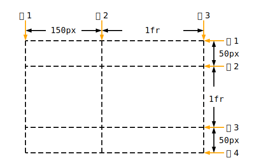
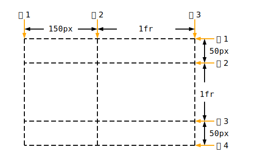
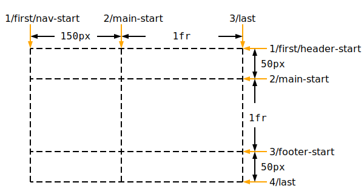
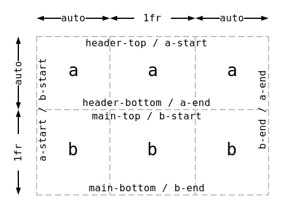
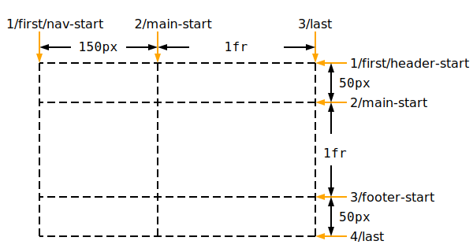
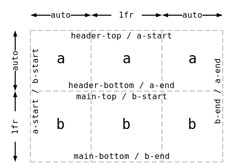
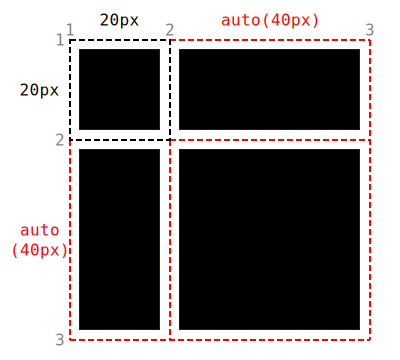
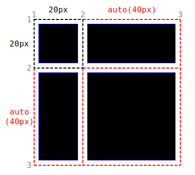

この仕様は、 UI 設計に最適化された二次元~格子に基づく~layout~systemについて述べる。
格子~layout~modelにおいては、格子~容器の一連の子を，予め定義された
~flexible／固定的な
sizeの~layout格子の中の任意の~slotに位置させられる。
◎
This CSS module defines a two-dimensional grid-based layout system, optimized for user interface design. In the grid layout model, the children of a grid container can be positioned into arbitrary slots in a predefined flexible or fixed-size layout grid.
CSS
は、（ HTML や XML などの）構造を備える文書から，
~screen, 紙, 発話, 等々
の媒体への具現化法を記述するための言語である。
◎
CSS is a language for describing the rendering of structured documents (such as HTML and XML) on screen, on paper, in speech, etc.
次の特色機能は
~at-risk
にあり，勧告候補の期間内に取下げられる可能性があります：
◎
The following features are at-risk, and may be dropped during the CR period:
`subgrid$v 値
◎
the subgrid value
`grid-row-gap$p／`grid-column-gap$p に対する `percentage$t 値
◎
the <percentage> value in grid-row-gap/grid-column-gap
Grid Layout Module と
Flexible Box Layout Module
とで整合しない点に気付かれた方は、おそらく誤りなので
CSSWG まで報告されたし。
◎
If you notice any inconsistencies between this Grid Layout Module and the Flexible Box Layout Module, please report them to the CSSWG, as this is likely an error.
1. 序論
~INFORMATIVE
Flexible Box Layout と同様に，
Grid Layout は，~boxとその内容に対する~sizingと位置決めを制御する強力な能を備えた CSS のための新たな~layout~modelである。
Unlike
しかしながら 単独の軸を指向する Flexbox と違って、
Grid Layout は，両~次元への内容の整列が欲されるような二次元的な~layoutに最適化されている。
加えて、tableと違って格子~layoutは，内容~構造を持たないので、［
流動的かつ~source順序に独立な~layout技法
］が許容され、~layoutへの変更も管理し易くなる。
`媒体照会$と, ［
格子~容器とその一連の子の~layout
］を制御する各種 CSS ~propとの組合せにより、作者は，内容の意味論上の性質を改めることなく，~layoutを多様な［
機器形態, 使用方位, 可用~空間
］に適応させられるようになる。
◎
Like Flexible Box Layout, Grid Layout is a new layout model for CSS that has powerful abilities to control the sizing and positioning of boxes and their contents. Unlike Flexbox, however, which is single-axis–oriented, Grid Layout is optimized for 2-dimensional layouts: those in which alignment of content is desired in both dimensions. In addition, and unlike tables, the absence of content structure in grid layout helps to manage changes to layout by allowing fluid and source order independent layout techniques. By combining media queries with the CSS properties that control layout of the grid container and its children, authors can adapt their layout to changes in device form factors, orientation, and available space, without needing to alter the semantic nature of their content.
◎
Grid Layout controls the layout of its content through the use of a grid: an intersecting set of horizontal and vertical lines which create a sizing and positioning coordinate system for the grid container’s contents. The contents of the grid container are organized into grid items (analogous to flex items), which are then assigned to slots (grid areas) in the grid—either explicitly through the grid placement properties or implicitly through auto-placement. If the explicit grid (defined by the grid-template-* properties) can’t fit all of the grid items, implicit grid tracks are added (as defined by the grid-auto-* properties). A grid shorthand on the grid container provides for setting all of these grid definition parameters at once, while the grid placement properties on the grid items determine their placement within the grid.
◎
Once the grid items have been placed, the sizes of the grid tracks (rows and columns) are calculated, accounting for the sizes of their contents and/or available space as specified in the grid definition. The sized grid is then aligned within its grid container according to the grid container’s align-content and justify-content properties. Finally each grid item is sized and aligned within its assigned grid area, as specified by its own sizing and alignment properties.
◎
Grid Layout features fixed, flexible, and content-based track sizing functions; explicit item positioning via forwards (positive) and backwards(negative) numbered grid coordinates, named grid lines, and named grid areas; automatic item placement into empty slots, including reordering with order; automatic addition of rows or columns to accommodate additional content; control over alignment and spacing with margins, gutters, and the alignment properties; and the ability to overlap content and control layering with z-index.
2.1. 背景と動機
`basic-form^dgm
図 1.
横方向と縦方向の整列を要する~appの~layout例
◎
Application layout example requiring horizontal and vertical alignment.
~websiteが単純な文書から複雑で対話的な~appへ発展するに伴い、例えば浮動体（ float ）などの文書~layoutのための道具は，~appの~layoutにとり十分なものとは言えなくなってきている。
~web~app作者~達は、［
~table,
JavaScript,
浮動体の要素に対する注意深い計量
］の組合せを用いながら，欲される~layoutを得るための対処法を模索してきた。
可用~空間の変化に適応する~layoutは，しばしば不安定であり、空間の拘束が厳しくなるに連れ，直感に反する挙動に悩まされる。
代替として、多くの作者~達は，固定的~layoutを~~選択しているが、画面~上の可用な描画~空間の可変性から得られる利点は享受できなくなる。
◎
As websites evolved from simple documents into complex, interactive applications, tools for document layout, e.g. floats, were not necessarily well suited for application layout. By using a combination of tables, JavaScript, or careful measurements on floated elements, authors discovered workarounds to achieve desired layouts. Layouts that adapted to the available space were often brittle and resulted in counter-intuitive behavior as space became constrained. As an alternative, authors of many web applications opted for a fixed layout that cannot take advantage of changes in the available rendering space on a screen.
格子~layoutには、これらの問題を解消する能力がある。
それは、作者が，~sizingについての予測可能な挙動の集合を用いて，可用~空間をいくつかの~colや~rowに分割して~layoutするための仕組みを提供する。
作者は、~appの構築部品となる要素~群の精確な位置と~sizeを，これらの~colや~rowの交差域で定義される`区画$の下で与えられるようになる。
図 1 には，格子~layoutにより得られる基本的な~layoutが示されている。
◎
The capabilities of grid layout address these problems. It provides a mechanism for authors to divide available space for layout into columns and rows using a set of predictable sizing behaviors. Authors can then precisely position and size the building block elements of their application into grid areas defined by the intersection of these columns and rows. Figure 1 illustrates a basic layout which can be achieved with grid layout.
2.2. ~layoutを可用~空間に適応させる
格子~layoutを利用すれば、~web頁~内の要素を気の利いた形に再flowさせられる。
図 2 は、 5 個の主要な~component［
タイトル, 成績, 盤面, スコア, ~control
］を備えたゲームの~layoutを表現している。
作者の意図は、ゲームのための空間を次の様に分割することである：
◎
Grid layout can be used to intelligently reflow elements within a webpage. Figure 2 represents a game with five major components in the layout: the game title, stats area, game board, score area, and control area. The author’s intent is to divide the space for the game such that:
`game-smaller^dgm
図 2.
［
可用な空間と, それぞれの内容~size
］に則って配列された 5 個の格子~駒
◎
Five grid items arranged according to content size and available space.
成績~区画は、常に，タイトルの直下に現れる。
◎
The stats area always appears immediately under the game title.
盤面は、成績／タイトルの右側に現れる。
◎
The game board appears to the right of the stats and title.
タイトルと盤面の上端は常に整列されるべきである。
◎
The top of the game title and the game board should always align.
盤面と成績~区画の下端は、ゲームが可用な空間の最小~縦幅に到達したときには整列するが、他のときは，実際に可用な画面の大きさによる利点を享受できるように，盤面が伸張される。
◎
The bottom of the game board and the stats area align when the game has reached its minimum height, but otherwise the game board will stretch to take advantage of all the screen real-estate available to it.
スコア区画は，タイトル／成績~区画により作成された~colに整列する一方、~control区画は，盤面の下部にて中央寄にされるべきである。
◎
The score area should align into the column created by the game and stats area, while the controls are centered under the board.
`game-larger^dgm
図 3.
可用~空間の増分による，格子の拡幅
◎
Growth in the grid due to an increase in available space.
作者は、すべての要素の［
絶対~位置, 横幅, 縦幅
］を~scriptで制御する代わりに、図 3に示される様に，格子~layoutを利用できる。
次の例に、作者がこの例に用いるであろう すべての［
~sizing, 配置, 整列
］の規則を宣言的に得る方法を示す：
◎
As an alternative to using script to control the absolute position, width, and height of all elements, the author can use grid layout, as shown in Figure 3. The following example shows how an author might achieve all the sizing, placement, and alignment rules declaratively.
格子の構造や, 一連の`格子~駒$の位置／~sizeを指定する際には、想定される状況に応じて最適化された，複数の方法をとり得ることに注意。
この例では、作者が，各 `格子~駒$が占める位置と空間を定義する際に，
`格子~容器$上の［
`grid-template-rows$p,
`grid-template-columns$p
］~prop, および
各`格子~駒$上の［
`grid-row$p, `grid-column$p
］~prop
を利用する方法を解説する。
◎
Note that there are multiple ways to specify the structure of the grid and to position and size grid items, each optimized for different scenarios. This example illustrates one that an author may use to define the position and space for each grid item using the grid-template-rows and grid-template-columns properties on the grid container, and the grid-row and grid-column properties on each grid item.
#grid {
/* 格子~layoutを用いて内容を~lay-outする。 */
display: grid;
/*
2 本の~col：
• 1 本目の~colは内容に合わせて~sizeされる。
• 2 本目の~colは残りの空間を受け取る（が、この~colを占める盤面やゲーム~controlに要する最小~横幅よりは，決して小さくされない）。
◎
* Two columns:
* 1. the first sized to content,
* 2. the second receives the remaining space
* (but is never smaller than the minimum size of the board
* or the game controls, which occupy this column [3])
*/
grid-template-columns:
/* col 1 */ auto
/* col 2 */ 1fr;
/*
3 本の~row：
• 1 本目, 3 本目の~rowは内容に合わせて~sizeされる。
• 2 本目の~rowは残りの空間を受け取る（が、盤面／成績~区画に要する最小~縦幅よりは，決して小さくされない）。
◎
* Three rows:
* 3. the first sized to content,
* 4. the middle row receives the remaining space
* (but is never smaller than the minimum height
* of the board or stats areas)
* 5. the last sized to content.
*/
grid-template-rows:
/* row 1 */ auto
/* row 2 */ 1fr
/* row 3 */ auto;
}
/*
ゲームの各~部品は、格子の各`罫$の合間に位置させられる。
部品の始端となる罫は，その罫への参照により指定される。
部品が複数の~row／~colに~spanする場合は、その本数の指定法を介して，終端となる罫が決定される。
それらは，その部品の境界を確立する。
◎
Each part of the game is positioned between grid lines by referencing the starting grid line and then specifying, if more than one, the number of rows or columns spanned to determine the ending grid line, which establishes bounds for the part.
*/
#title { grid-column: 1; grid-row: 1; }
#score { grid-column: 1; grid-row: 3; }
#stats { grid-column: 1; grid-row: 2; align-self: start; }
#board { grid-column: 2; grid-row: 1 / span 2; }
#controls { grid-column: 2; grid-row: 3; justify-self: center; }
先の例に継続して，作者はゲームを［
伝統的なコンピュータモニタ,
携帯~機器,
タブレット型コンピュータ
］上の可用~空間にもそれぞれ適応させたいとする。
また，ゲームでは、
縦長（ portrait ）／横長（ landscape ）
のいずれの方位（ `orientation^css ）で表示されるときでも（下の図 4 と 5 ），各種~componentの配置が最適化されるべきであるとする。
格子~layoutを`媒体照会$と組合せることで、作者は、一連の要素を，それらの意味論上の~markupは変えないまま, ~source順序とは独立に、いずれの方位でも欲される~layoutが得られるように，再配列できる。
◎
Continuing the prior example, the author also wants the game to adapt to the space available on traditional computer monitors, handheld devices, or tablet computers. Also, the game should optimize the placement of the components when viewed either in portrait or landscape orientation (Figures 4 and 5). By combining grid layout with media queries, the author is able to use the same semantic markup, but rearrange the layout of elements independent of their source order, to achieve the desired layout in both orientations.
`game-portrait^dgm
図 4.
“縦長” 方位に適する配列。
◎
An arrangement suitable for “portrait” orientation.
`game-landscape^dgm
図 5.
“横長” 方位に適する配列。
◎
An arrangement suitable for “landscape” orientation.
次の例では、格子~layoutの能を活用して，`格子~駒$に占められる空間に名前を付ける。
これにより、格子の定義が変更されても，`格子~駒$のための規則を書き直さずに済むようになる。
◎
The following example leverages grid layout’s ability to name the space which will be occupied by a grid item. This allows the author to avoid rewriting rules for grid items as the grid’s definition changes.
@media (orientation: portrait) {
#grid {
display: grid;
/*
格子の各［
~row, ~col, 区画
］は、 `grid-template-areas$p ~propを用いて視覚的に定義される。
各~文字列が 1 本の~rowを表し, その中の各~単語が~rowの中のある区画を表す。
~col数は文字列~内の語数から決定される
— どの文字列~内の語数も一致するように揃えなければならないことに注意。
◎
The rows, columns and areas of the grid are defined visually using the grid-template-areas property. Each string is a row, and each word an area. The number of words in a string determines the number of columns. Note the number of words in each string must be identical.
*/
grid-template-areas: "title stats"
"score stats"
"board board"
"ctrls ctrls";
/*
~template~propにより作成される各~col／~rowには、
`grid-template-columns$p ／ `grid-template-rows$p
~propにより，~sizing関数をあてがえる。
◎
Columns and rows created with the template property can be assigned a sizing function with the grid-template-columns and grid-template-rows properties.
*/
grid-template-columns: auto 1fr;
grid-template-rows: auto auto 1fr auto;
}
}
@media (orientation: landscape) /* 横長~方位 */ {
#grid {
display: grid;
/*
ここでも， ~template~propは，同じ一連の名前からなる区画を定義するが、ここでは，
横長~方位により適するように位置を替える：
◎
Again the template property defines areas of the same name, but this time positioned differently to better suit a landscape orientation.
*/
grid-template-areas: "title board"
"stats board"
"score ctrls";
grid-template-columns: auto 1fr;
grid-template-rows: auto 1fr auto;
}
}
/*
`grid-area$p ~propにより、格子~駒は，格子の有名~領域（区画）に配置されるようになる：
◎
The grid-area property places a grid item into a named region (area) of the grid.
*/
#title { grid-area: title }
#score { grid-area: score }
#stats { grid-area: stats }
#board { grid-area: board }
#controls { grid-area: ctrls }
注記：
格子~layoutによる並替えの能力は，意図的に
視覚的~描画に対してのみ
影響するようにされており、発話~順序や~source順序に基づく~navigationは，そのままにされる。
これにより，作者は、［
非 CSS の~UA, あるいは
発話や逐次的~navigationなどの一次元的~model
］のための~source順序には触れずに，視覚的~呈示を操作したり最適化できるようになる。
◎
Note: The reordering capabilities of grid layout intentionally affect only the visual rendering, leaving speech order and navigation based on the source order. This allows authors to manipulate the visual presentation while leaving the source order intact and optimized for non-CSS UAs and for linear models such as speech and sequential navigation.
格子~駒の配置と並替えは、~sourceに対する正しい順序付けの代用として利用されては~MUST_NOT
— 文書の~accessibilityが損なわれることになるので。
◎
Grid item placement and reordering must not be used as a substitute for correct source ordering, as that can ruin the accessibility of the document.
2.4. 格子における一連の要素の重層法
図 6 に示される例では、作者は~~自前の~slider~controlを作成しているとする。
~controlは 6 個の部品（図の破線）からなる。
最低値／最高値
のラベルは、~controlの 左／右 辺に寄せられている。
~sliderの筋は、この２つのラベルの合間の区画に~spanする。
~thumbより
低値側／高値側
を埋める部品は、~thumbの背後に触れている。
~thumbの横幅と縦幅は固定的であり、 2 本の~flex-sized~col（図の `0.5fr^v ）を更新することにより，筋に沿って移動させられる。
◎
figure 6.
A control composed of layered HTML elements.
◎
In the example shown in Figure 6, the author is creating a custom slider control. The control has six parts. The lower-limit and upper-limit labels align to the left and right edges of the control. The track of the slider spans the area between the labels. The lower-range and upper-range fill parts touch beneath the thumb, and the thumb is a fixed width and height that can be moved along the track by updating the two flex-sized columns.
`control-layering-and-alignment^dgm
図 6.
重層化された いくつかの HTML 要素から組立てられる~control
以前までなら、作者は，~controlを構成する各 HTML 要素について，それらの横幅と縦幅の指定法と伴に，左上隅の座標を制御するための絶対~位置決めも要していたであろう。
格子~layoutを活用すれば、作者は，~script利用を ~thumb上の~mouse-eventの取扱いに限らせ、`格子~容器$の `grid-template-columns$p ~propを更新するだけで，筋に沿うどの位置にも ~thumbを合わせることが可能になる。
◎
Prior to the introduction of grid layout, the author would have likely used absolute positioning to control the top and left coordinates, along with the width and height of each HTML element that comprises the control. By leveraging grid layout, the author can instead limit script usage to handling mouse events on the thumb, which snaps to various positions along the track as the grid-template-columns property of the grid container is updated.
#grid {
display: grid;
/*
`grid-template-columns^p,
`grid-template-rows^p
~propは、`罫$の命名も~supportし，その名前を格子~駒の位置~決めに利用できる。
罫~名は、各［
筋rcの~sizing関数
］の左右どちら側にも，あてがえる
— その名前の罫は、そのあてがった所に論理的に存在することになる。
◎
The grid-template-columns and rows properties also support naming grid lines which can then be used to position grid items. The line names are assigned on either side of a column or row sizing function where the line would logically exist.
*/
grid-template-columns:
[start] auto
[track-start] 0.5fr
[thumb-start] auto
[fill-split] auto
[thumb-end] 0.5fr
[track-end] auto
[end];
}
/*
`格子~配置~prop$は、`有名~罫$を受容する。
下の例では、各`罫$が名前で~~参照される。
意味論上の利点のみならず、名前を利用すれば，作者は［
格子~駒 上の
`grid-column-start$p ／ `grid-row-start$p
~propにおける一連の罫への~~参照
］を再~付番せずに済ませられる。
これは、前~節で［
方位の変化に応じた
`grid-template-areas^p ~prop
］に例示された概念と同様であるが、罫は、この例の~thumbや筋~部品の様に［
重なり合う種々の形状の区画を持つような 重層化された格子~駒
］に対しても，機能する。
◎
The grid-placement properties accept named lines. Below the lines are referred to by name. Beyond any semantic advantage, the names also allow the author to avoid renumbering the grid-column-start and grid-row-start properties of the grid items. This is similar to the concept demonstrated in the prior example with the grid-template-areas property during orientation changes, but grid lines can also work with layered grid items that have overlapping areas of different shapes like the thumb and track parts in this example.
*/
#low-label { grid-column-start: start; }
#track { grid-column: track-start / track-end; justify-self: center; }
#high-label { grid-column-end: end; }
/*
fill 部品は筋の上層に描かれるので
`z-index^p を 5 に設定する。
◎
Fill parts are drawn above the track so set z-index to 5.
*/
#low-fill { grid-column: track-start / fill-split;
justify-self: end;
z-index: 5; }
#high-fill { grid-column: fill-split / track-end;
justify-self: start;
z-index: 5; }
/*
~thumbは最上~層の部品なので，最高 `z-index^p 値をあてがう。
◎
Thumb is the topmost part; assign it the highest z-index value.
*/
#thumb { grid-column: thumb-start / thumb-end;
z-index: 10 }
`格子~layout@
においては、`格子~容器$の内容は，`格子$の中で位置されてから, 整列されることにより，~lay-outされる。
`格子@（ grid ）
とは、`格子~容器$の空間をいくつかの`区画$に分割する，縦横に交差する幾本かの`罫$からなる集合であり、（`格子~容器$の内容を表現する）一連の`格子~駒$を，それらの区画に配置できるようにする。
これらの`罫$のうち、`塊軸$ `CSS3-WRITING-MODES$r（
`~col軸@
）~~方向のものが
`格子~col@
を定義し、それに直交する`行内軸$ `CSS3-WRITING-MODES$r（
`~row軸@
）~~方向のものが
`格子~row@
を定義する。
◎
In grid layout, the content of a grid container is laid out by positioning and aligning it into a grid. The grid is an intersecting set of horizontal and vertical grid lines that divides the grid container’s space into grid areas, into which grid items (representing the grid container’s content) can be placed. There are two sets of grid lines: one set defining columns that run along the block axis (the column axis), and an orthogonal set defining rows along the inline axis (the row axis). [CSS3-WRITING-MODES]
`grid-lines^dgm
図 7.
塊軸 方向の`罫$が 3 本, 行内軸 方向の罫が 4 本。
◎
Grid lines: Three in the block axis and four in the inline axis.
3.1. 罫（格子~線）
`格子~線@,
もしくは単に
罫（ line ）
とは、`格子$を横方向／縦方向に分割する【太さの無い】線である
【この訳では、もっぱら， “罫” の表記に統一する】
。
`罫$は、~colか~rowのいずれかの方向に沿って存在する。
それらは［
数的~index【 1 から数える】, あるいは指定された名前
］により~~参照し得る。
`格子~駒$の`格子$内における位置は、格子~配置~propを介して参照される`罫$から決定される。
◎
Grid lines are the horizontal and vertical dividing lines of the grid. A grid line exists on either side of a column or row. They can be referred to by numerical index, or by an author-specified name. A grid item references the grid lines to determine its position within the grid using the grid-placement properties.
次の 2 つの例では、いずれも［
3 本の~col`罫$と 4 本の~row`罫$
］が作成される。
◎
The following two examples both create three column grid lines and four row grid lines.
最初の例は、番号【すなわち，数的~index — 端から数えた本数】による`罫$を利用して`格子~駒$を位置させる方法を示している。
◎
This first example demonstrates how an author would position a grid item using grid line numbers:
二番目の例は、明示的な有名`罫$を利用している：
◎
This second example uses explicitly named grid lines:
/*
先の例に等価な~layout。
ここでは`有名~罫$を用いる。
◎
equivalent layout to the prior example, but using named lines
*/
#grid {
display: grid;
grid-template-columns: 150px [item1-start] 1fr [item1-end];
grid-template-rows: [item1-start] 50px 1fr 50px [item1-end];
}
#item1 {
grid-column: item1-start / item1-end;
grid-row: item1-start / item1-end;
}
3.2. 格子の筋と升
`格子~筋@,
もしくは単に
筋（ track ）
とは、
`格子~col$, `格子~row$
の総称である
【この訳では、もっぱら， “筋” と略記する】
— 言い換えれば、それは，隣接する 2 本の平行な `罫$の合間の空間である。
各`筋$には，~sizing関数があてがわれる。
それは、筋rcがどれだけ太く拡幅し得るか
— すなわち，その境界の`罫$の間隔をどれだけ離せるか —
を制御する。
互いに隣接する`筋$は、［
`側溝$, または
整列
］によるアキで分離され得る
— さもなければ、すき間なく収納される。
◎
Grid track is a generic term for a grid column or grid row—in other words, it is the space between two adjacent grid lines. Each grid track is assigned a sizing function, which controls how wide or tall the column or row may grow, and thus how far apart its bounding grid lines are. Adjacent grid tracks can be separated by gutters or alignment spacing, but are otherwise packed tightly.
`格子~升@,
もしくは単に
升（ cell ）
は、格子の ある［
~row, ~col
］の交差域である。
【この訳では、もっぱら， “升” と略記する】
—
それは、 ~rowと~colのそれぞれについて 隣接する 2 本の`罫$に囲まれた空間であり、`格子~駒$を位置させるときに参照し得る，格子の最も小さい単位である。
◎
A grid cell is the intersection of a grid row and a grid column. It is the smallest unit of the grid that can be referenced when positioning grid items.
次の例では、 2 本の~colと 3 本の~rowが在る。
最初の~colは太さ `150px^v に固定されている。
2 本目の~colの太さには ~flexible~sizing（ `1fr^v ）が利用されている
— それは格子の中で未割り当ての空間の関数であり，`格子~容器$の横幅の変化に応じて変わることになる。
`格子~容器$の使用~横幅が `200px^v ならば、 2 本目の~colは太さ `50px^v になる。
`格子~容器$の使用~横幅が `100px^v ならば、 2 本目の~colは太さ `0px^v になり，この~colに位置される内容は `格子~容器$を~overflowすることになる。
◎
In the following example there are two columns and three rows. The first column is fixed at 150px. The second column uses flexible sizing, which is a function of the unassigned space in the Grid, and thus will vary as the width of the grid container changes. If the used width of the grid container is 200px, then the second column 50px wide. If the used width of the grid container is 100px, then the second column is 0px and any content positioned in the column will overflow the grid container.
`格子~区画@,
もしくは単に
区画（ area ）
とは、`格子~駒$の~lay-outに用いられる，論理的な空間である
【この訳では、もっぱら， “区画” と略記する】
。
区画は、その境界の各~側に対応する 4 本の`罫$で囲まれる。
区画は、それに交差する`筋$の~sizingに関与する。
区画は、［
`格子~容器$の `grid-template-areas$p ~propを利用して付与される名前
］を介して明示的に，あるいは［
その境界を成す`罫$
］を介して暗黙的に、参照される。
それぞれの`格子~駒$は、格子~配置~propを用いて`区画$にあてがわれる。
◎
A grid area is the logical space used to lay out one or more grid items. It is bound by four grid lines, one on each side of the grid area, and participates in the sizing of the grid tracks it intersects. A grid area can be named explicitly using the grid-template-areas property of the grid container, or referenced implicitly by its bounding grid lines. A grid item is assigned to a grid area using the grid-placement properties.
/*
~template構文の用例
◎
using the template syntax
*/
#grid {
display: grid;
grid-template-areas: ". a"
"b a"
". a";
grid-template-columns: 150px 1fr;
grid-template-rows: 50px 1fr 50px;
}
#item1 { grid-area: a }
#item2 { grid-area: b }
#item3 { grid-area: b }
/*
`#item2^c と `#item3^c を区画 "`b^c" の中の異なる地点に整列させる。
既定では、各~格子~駒は，それらの区画に収まる様に伸張されるので，これらの駒は 互いに重なり合うことになる。
◎
Align items 2 and 3 at different points in the Grid Area "b".
◎
By default, Grid Items are stretched to fit their Grid Area
◎
and these items would layer one over the other.
*/
#item2 { align-self: start; }
#item3 { justify-self: end; align-self: end; }
`区画$は、その中に~lay-outされる`格子~駒$のための包含塊を形成する。
同じ`区画$に配置された複数の`格子~駒$は、直接的には互いの~layoutに影響しない。
しかしながら，間接的には、`格子~駒$が`内在的~sizing関数$を伴う場合、その駒が占めている筋の~sizeに（したがってそれを囲んでいる`罫$の位置にも）影響し得る結果、別の`格子~駒$の位置や~sizeにも影響することになる。
◎
A grid item’s grid area forms the containing block into which it is laid out. Grid items placed into the same grid area do not directly affect each other’s layout. Indirectly, however, a grid item occupying a grid track with an intrinsic sizing function can affect the size of that track (and thus the positions of its bounding grid lines), which in turn can affect the position or size of another grid item.
この値は、要素が生成する~boxを，`塊level$の`格子~容器$にする。
◎
This value causes an element to generate a block-level grid container box.
`inline-grid@v
この値は、要素が生成する~boxを，`行内level$の`格子~容器$にする。
◎
This value causes an element to generate an inline-level grid container box.
`格子~容器@
は、その内容のための新たな
`格子~整形文脈@
を確立する。
これは、その内容の~layoutに，塊~layoutではなく 格子~layoutを利用することを除き，`塊~整形文脈$を確立するときと同じである
【何が？ 自身の内容に対する包含塊を，同じように確立する？】
。
浮動体は格子~容器の中へは侵入せず，また，格子~容器の~marginと その内容の~marginとが相殺されることはない。
`格子~容器$の内容は、各 `駒$の包含塊の境界線を形成している`罫$により，`格子$の中へ~lay-outされる。
`overflow$p ~propは，`格子~容器$にも適用される。
◎
A grid container establishes a new grid formatting context for its contents. This is the same as establishing a block formatting context, except that grid layout is used instead of block layout: floats do not intrude into the grid container, and the grid container’s margins do not collapse with the margins of its contents. The contents of a grid container are laid out into a grid, with grid lines forming the boundaries of each grid items’ containing block. The overflow property applies to grid containers.
格子~容器は`塊~容器$ではないので、塊~layoutを前提に設計されている~propには，格子~layoutの文脈~下では適用されないものもある。
特に：
◎
Grid containers are not block containers, and so some properties that were designed with the assumption of block layout don’t apply in the context of grid layout. In particular:
Multi-column Layout ~module `CSS3COL$r
の各種 `column-*^p ~propは、格子~容器~上では効果を持たない。
◎
the column-* properties in the Multi-column Layout module [CSS3COL] have no effect on a grid container.
`float$p, `clear$p は、`格子~駒$上においては，効果を持たない。
（しかしながら、 `float$p ~propは，依然として格子~容器の子~上の `display$p の算出値に影響する。
それは、`格子~駒$が決定される よりも前に 算出されるので。）
◎
float and clear have no effect on a grid item. (However, the float property still affects the computed value of display on children of a grid container, as this occurs before grid items are determined.)
`vertical-align$p は格子~駒 上では，効果を持たない。
◎
vertical-align has no effect on a grid item.
疑似~要素
`first-line$pe,
`first-letter$pe
は、`格子~容器$には適用されない。
`格子~容器$は、その先祖に，［
`最初の整形行$（ first formatted line ）や,
先頭字（ first letter ）
］を供与しない。
◎
the ::first-line and ::first-letter pseudo-elements do not apply to grid containers, and grid containers do not contribute a first formatted line or first letter to their ancestors.
浮動体, または 絶対位置の要素に対しては、
`display$p の指定値が `inline-grid$v の場合，その算出値は `grid$v になる
【
すなわち，`塊~化$される
】
。
したがって，
CSS 2.1 の 9.7 節
の表には，次の~~修正が加えられる：
［
“指定値” 列の欄が `inline-grid$v,
“算出値” 列の欄が `grid$v
］なる行を追加-。
◎
If an element’s specified display is inline-grid and the element is floated or absolutely positioned, the computed value of display is grid. The table in CSS 2.1 Chapter 9.7 is thus amended to contain an additional row, with inline-grid in the "Specified Value" column and grid in the "Computed Value" column.
5.2. 格子~容器の~sizing
`格子~容器$は、それが関与する整形文脈の規則を利用して~sizeされる。
`塊~整形文脈$における`塊level$の~boxとしては，`塊~box$（であったもの）が整形文脈を確立するようにされたときと同様に~sizeされる
— その際の `auto$vt による行内~sizeは、`~flow内$にある塊~boxに対するときと同様に計算される。
行内~整形文脈における`行内level$の~boxとしては，`不可分な行内level$の~box（行内塊など）と同様に~sizeされる。
行内／塊いずれの整形文脈においても、`格子~容器$に対する `auto$vt による`塊~size$は，その`最大内容~size$になる。
塊~layoutの仕様は、これを定義するべきか？
◎
A grid container is sized using the rules of the formatting context in which it participates. As a block-level box in a block formatting context, it is sized like a block box that establishes a formatting context, with an auto inline size calculated as for in-flow block boxes. As an inline-level box in an inline formatting context, it is sized as an atomic inline-level box (such as an inline-block). In both inline and block formatting contexts, the grid container’s auto block size is its max-content size.
The block layout spec should define this?
格子が`最大内容~拘束$の下で~sizeされるときの，`格子~容器$の`最大内容~size$は、`格子~容器$の適切な軸の方の一連の筋~sizeの総和になる。
◎
The max-content size of a grid container is the sum of the grid container’s track sizes in the appropriate axis, when the grid is sized under a max-content constraint.
格子が`最小内容~拘束$の下で~sizeされるときの，`格子~容器$の`最小内容~size$は、`格子~容器$の適切な軸の方の一連の筋~sizeの総和になる。
◎
The min-content size of a grid container is the sum of the grid container’s track sizes in the appropriate axis, when the grid is sized under a min-content constraint.
この節の用語の定義については， `CSS3-SIZING$r を見よ。
◎
See [CSS3-SIZING] for a definition of the terms in this section.
5.3. 大き過ぎる格子の切詰め
記憶域には，限りがあるので、~UAは、`格子$に可能な~size【~span数】を自身が定義する上限に切詰めて，その上限の外側になる罫を落としてよい
【例えば ~repeat_func の利用により，本数が巨大になるとき】
。
`格子~駒$が，この上限の外側に位置する場合、その格子~区画は，その上限付き格子まで
切詰められ
~MUST。
◎
Since memory is not infinite, UAs may clamp the possible size of the grid to within a UA-defined limit, dropping all lines outside that limit. If a grid item is placed outside this limit, its grid area must be clamped to within this limited grid.
`格子~区画を切詰める@
ときは：
◎
To clamp a grid area:
`区画$が上限付き`格子$の外側まで~spanする場合は、その~span数を，上限付き格子の最後の罫まで切詰める。
◎
If the grid area would span outside the limited grid, its span is clamped to the last line of the limited grid.
`区画$が，上限付き格子の完全に外側に配置される場合、その~span数を 1 にした上で，区画を格子のその側の最後の`筋$に再置する。
◎
If the grid area would be placed completely outside the limited grid its span must be truncated to 1 and the area repositioned into the last grid track on that side of the grid.
例えば、~UAが各~次元について，最大 1000 本までの筋を~supportする場合、配置~propを次のようにしたときの結果は：
◎
For example, if a UA only supported grids with at most 1000 tracks in each dimension, the following placement properties:
大雑把に言えば、`格子~容器$の
`格子~駒@
とは、その~flow内にある内容を表現する~boxである：
`格子~容器$の~flow内にある子~要素の それぞれは，`格子~駒$になり、`格子~容器$に直接的に包含される ~text連なりのそれぞれは，匿名 `格子~駒$により包装される。
ただし，
空白
のみを包含する匿名~格子~駒は、
`display$p: `none^v
であったかのように描画されない
【
おそらく、`自動配置~algo$においても無視され， 1 個の駒として数えられない、とすべきであろう
】
。
◎
Loosely speaking, the grid items of a grid container are boxes representing its in-flow contents: each in-flow child of a grid container becomes a grid item, and each contiguous run of text that is directly contained inside a grid container is wrapped in an anonymous grid item. However, an anonymous grid item that contains only white space is not rendered, as if it were display:none.
要素~間の空白は消え去り，格子~駒にはならないことに注意
— 要素~間の【非~空白を含む】~textは、~~実際に 匿名の格子~駒に包装されるが。
◎
Note that the inter-element white space disappears: it does not become its own grid item, even though the inter-element text does get wrapped in an anonymous grid item.
匿名~駒の~boxには、~style規則をあてがう要素がないので，~styleをあてがえないことに注意。
しかしながら，その内容は、格子~容器から~style（~font設定群など）を継承する。
◎
Note also that the anonymous item’s box is unstyleable, since there is no element to assign style rules to. Its contents will however inherit styles (such as font settings) from the grid container.
`格子~駒$は、その内容のための新たな整形文脈を確立する。
この整形文脈の種別は、通常通り，その `display$p 値から決定される。
しかしながら，格子~駒は
`格子level@
の~boxであって, `塊level$の~boxではないので、`塊~整形文脈$ではなく，それらの容器の`格子~整形文脈$に関与する。
◎
A grid item establishes a new formatting context for its contents. The type of this formatting context is determined by its display value, as usual. However, grid items are grid-level boxes, not block-level boxes: they participate in their container’s grid formatting context, not in a block formatting context.
`格子~駒$は、その`区画$により定義される包含塊の中で~sizeされる
— 等価に~sizeされた包含塊~内の等価な`塊level$~boxに類似するように、ただし，
`auto^v ~margin, および `~box整列~prop$ が特別な効果を持つことを除いて。
（整列 節を見よ。）
◎
A grid item is sized within the containing block defined by its grid area similarly to an equivalent block-level box in an equivalently-sized containing block, except that auto margins and the box alignment properties have special effects. (See §11 Alignment and Spacing.)
`格子~駒$上の［
`min-width$p ／ `min-height$p
に対する値 `auto^v
による 当該の軸における挙動
］は、~flex~layoutの下での［
`主軸$における `~flex駒$に対する `~min_auto$v による挙動
］と相似的になる。
格子~駒の暗黙的な最小~size
節を見よ。
◎
The auto value of min-width and min-height behaves on grid items in the relevant axis analogously to its behavior on flex items in the main axis. See §6.5 Implied Minimum Size of Grid Items.
内在的~縦横比と, 格子の二次元的性質による含意について考査する必要がある。
◎
Review implications of intrinsic ratio and Grid’s 2D nature.
`駒$の `display$p 値は、`塊~化$される：
［［
`格子~容器$を生成している要素の`~flow内$にある子
］の `display$p の指定値
］が，`行内level$を表す値である場合の算出値は、それに等価な`塊level$を表す値にされる（この型の `display$p 値の変換の詳細は、
CSS2.1, 9.7 節
`CSS21$r と
CSS Display
`CSS3-DISPLAY$r
を見よ。）
◎
The display value of a grid item is blockified: if the specified display of an in-flow child of an element generating a grid container is an inline-level value, it computes to its block-level equivalent. (See CSS2.1§9.7 [CSS21] and CSS Display [CSS3-DISPLAY] for details on this type of display value conversion.)
注記：
`display$p の値には、通常においては元の~boxの周りに匿名~boxを生成させるものもある。
そのような~boxが格子~駒である場合、それは先ず`塊~化$されるので，匿名~boxは作成されなくなる。
例えば， 2 個の連続する駒が
`display^p: `table-cell$v
にされている場合、単独の匿名~tableに包装される代わりに， 2 個の別々の
`display$p: `block^v
にされた駒になる。
◎
Note: Some values of display normally trigger the creation of anonymous boxes around the original box. If such a box is a grid item, it is blockified first, and so anonymous box creation will not happen. For example, two contiguous grid items with display: table-cell will become two separate display: block grid items, instead of being wrapped into a single anonymous table.
6.1. 格子~駒を畳む： `visibility^p ~prop
筋を畳む機能が望まれているが（
~flex駒の~collapse法
や
~tableの~row／~colによるもの
と同様な）、どの様な形で実現させるかは，まだはっきりしていない。
良案があれば，
~WWWSTYLEMLGRIDTRACKS
宛まで投稿されたし。
◎
We want the ability to collapse grid tracks (similar to collapsing flex items or table rows/columns), but we’re not sure exactly how to do it. Ideas welcome, please post them to www-style@w3.org.
6.2. 格子~駒の並替え： `order^p ~prop
`order$p ~propは，`格子~駒$にも適用され、それらの`自動配置$や`塗り順序$に影響する。
◎
The order property also applies to grid items. It affects their auto-placement and painting order.
~flex駒の並替えと同様に、 `order$p ~propは，［
視覚的~順序を 発話や~navigationの順序と 違える 必要がある場合
］に限って利用され~MUST。
必要なければ、下層の文書~sourceが並替えられるべきである。
並替えと~accessibility
`CSS-FLEXBOX-1$r
を見よ。
◎
As with reordering flex items, the order property must only be used when the visual order needs to be out-of-sync with the speech and navigation order; otherwise the underlying document source should be reordered instead. See Reordering and Accessibility in [CSS-FLEXBOX-1].
◎
As adjacent grid items are independently contained within the containing block formed by their grid areas, the margins of adjacent grid items do not collapse.
◎
Percentage margins and paddings on grid items can be resolved against either:
◎
• their own axis (left/right percentages resolve against width, top/bottom resolve against height), or,
◎
• the inline axis (left/right/top/bottom percentages all resolve against width)
◎
A User Agent must choose one of these two behaviors.
◎
Note: This variance sucks, but it accurately captures the current state of the world (no consensus among implementations, and no consensus within the CSSWG). It is the CSSWG’s intention that browsers will converge on one of the behaviors, at which time the spec will be amended to require that.
作者は、格子~駒の
~padding／~margin
には，百分率の利用を全面的に避けるべきである。
— それらは、~browserごとに挙動が異なるので。
◎
Authors should avoid using percentages in paddings or margins on grid items entirely, as they will get different behavior in different browsers.
格子~駒に対する自動~marginは、対応する次元の余った空間を吸収するように拡幅される。
これを利用すれば、駒たちを互いを整列させられる。
`auto^v ~marginによる整列法
節を見よ。
◎
Auto margins expand to absorb extra space in the corresponding dimension, and can therefore be used for alignment. See Aligning with auto margins.
6.4. Z 軸の順序付け： `z-index^p ~prop
2 つの`格子~駒$は、互いに交差する（すなわち，ある`升$を共有する）`区画$に位置されるとき，あるいは交差しない区画に位置されるときでも, 負の~marginや負の位置決めにより、互いに重なり得る。
`格子~駒$の塗り順序は、そのままの文書順の代わりに`改変文書順$が用いられることを除いて
行内~塊 [CSS21] のそれと正確に同じになり、
`auto^v 以外の `z-index$p 値は， `position$p が `static^v であっても積層文脈を作成する。
したがって、格子~駒の z-軸 順序は， `z-index$p ~propで容易に制御できる
◎
Grid items can overlap when they are positioned into intersecting grid areas, or even when positioned in non-intersecting areas because of negative margins or positioning. The painting order of grid items is exactly the same as inline blocks [CSS21], except that order-modified document order is used in place of raw document order, and z-index values other than auto create a stacking context even if position is static. Thus the z-index property can easily be used to control the z-axis order of grid items.
注記：
格子~駒の外側に位置される子孫も，依然として 格子~駒により確立される積層文脈に関与する。
◎
Note: Descendants that are positioned outside a grid item still participate in any stacking context established by the grid item.
次の図式に、暗黙的~source順序と,
それらの積層順序の制御に用いられる明示的 `z-index$p
の組合せにより，いくつかの格子~駒が重ねられる様子を示す：
◎
The following diagram shows several overlapping grid items, with a combination of implicit source order and explicit z-index used to control their stacking order.
`drawing-order^dgm
図 9.
`z-index^p と~source順序により制御される描き順序
◎
Drawing order controlled by z-index and source order.
`駒$に対する，より適度な既定の最小~sizeを提供するため、この仕様は，`駒$上の
`min-width$p ／ `min-height$p
に対する `~min_auto$v 値†の効果を定義する。
◎
To provide a more reasonable default minimum size for grid items, this specification defines the effects of the min-width/min-height auto value for grid items.
［
`overflow$p が（横方向に）
`visible^v
にされた`駒$
］上の `min-width^p に `auto^v が指定された場合、（`~flex駒$に対するときとちょうど同じように）`自動的~最小~size$を指定する。
`CSS-FLEXBOX-1$r
◎
On a grid item whose overflow is visible, when auto is specified on the grid item, it specifies an automatic minimum size (just as for flex items). [CSS-FLEXBOX-1]
大抵の場合、内容に基づく最小~sizeは適切であり，内容が重なり合ったり, その容器の外側にあふれないようにするが、一部の場合はそうならない：
◎
Note that while a content-based minimum size is often appropriate, and helps prevent content from overlapping or spilling outside its container, in some cases it is not:
特に、格子~layoutが文書の主要な内容~領域に用いられる場合、フォントサイズに相対的な，最小の横幅（ `min-width$p: `12em^v など）を明示的に設定した方がよい。
最小~横幅が内容に基づくものである場合、巨大な~table／画像があるときに，内容~領域~全体の~sizeを~overflowする地帯にまで伸張させ、~text行を無用に~~長く, 読みづらくさせることになる。
◎
In particular, if grid layout is being used for a major content area of a document, it is better to set an explicit font-relative minimum width such as min-width: 12em. A content-based minimum width could result in a large table or large image stretching the size of the entire content area into an overflow zone, and thereby making lines of text gratuitously long and hard to read.
内容に基づく~sizingが，多量の内容を伴う駒に用いられた場合、~layoutエンジンはその最小~sizeを見出す前に，その内容すべてを走査しなければならなくなる。
作者が明示的な最小~sizeを設定しておけば、これは不要になる。
（駒の内容が少量ならば走査は自明であり，処理能に配慮する必要はない）
◎
Note also, when content-based sizing is used on an item with large amounts of content, the layout engine must traverse all of this content before finding its minimum size, whereas if the author sets an explicit minimum, this is not necessary. (For items with small amounts of content, however, this traversal is trivial and therefore not a performance concern.)
7. 格子の定義法
7.1. 明示的~格子
3 種の~prop［
`grid-template-rows$p,
`grid-template-columns$p,
`grid-template-areas$p
］は、共同して`格子~容器$の
`明示的~格子@
を定義する。
`grid$p ~propは、これらの~propを一括して設定するときに利用できる`簡略形$である。
最終的な格子は、`格子~駒$が`明示的~格子$の外側に配置されたときに，暗黙的に筋が追加されるため、より大きくなり得る。
この暗黙的な筋の~sizeは，［
`grid-auto-rows$p, `grid-auto-columns$p
］~propにより指定される。
◎
The three properties grid-template-rows, grid-template-columns, and grid-template-areas together define the explicit grid of a grid container. The grid property is a shorthand that can be used to set all three at the same time. The final grid may end up larger due to grid items placed outside the explicit grid; in this case, any implicit tracks are sized by the grid-auto-rows and grid-auto-columns properties.
`明示的~格子$の筋rcの総本数は、［
`grid-template-areas$p により定義される筋rcの本数
］と［
`grid-template-rows$p ／ `grid-template-columns$p
により~sizeされる筋rcの本数
］の大きい方として決定される。
［
`grid-template-areas$p により定義された筋rcのうち，［
`grid-template-rows$p ／ `grid-template-columns$p
］~propから~sizeされないもの
］の~sizeは、［
`grid-auto-rows$p ／ `grid-auto-columns$p
］~propから取り入れられる。
これらの~propが`明示的~格子$の筋を全く定義しない場合でも、`明示的~格子$は，各~軸に 1 本の`罫$を包含する。
◎
The size of the explicit grid is determined by the larger of the number of rows/columns defined by grid-template-areas and the number of rows/columns sized by grid-template-rows/grid-template-columns. Any rows/columns defined by grid-template-areas but not sized by grid-template-rows/grid-template-columns take their size from the grid-auto-rows/grid-auto-columns properties. If these properties don’t define any explicit tracks, the explicit grid still contains one grid line in each axis.
`格子~配置~prop$の中の
正数／負数
による数的~indexは、`明示的~格子$の
`始端$／`終端$
側から,
1 ／ −1
から，罫を数える。
◎
Numeric indexes in the grid-placement properties count from the edges of the explicit grid. Positive indexes count from the start side (starting from 1 for the start-most explicit line), while negative indexes count from the end side (starting from -1 for the end-most explicit line).
`●名^ `grid-template-columns@p, `grid-template-rows@p
`●値^ `none$vt | `track-list$t | `auto-track-list$t
`●初^ `none$vt
`●適^ `格子~容器$
`●継^ されない
`●百^
対応する次元の`内容~区画$に相対的
◎
refer to corresponding dimension of the content area
`●媒^ 視覚的
`●算^
指定値
— ただし，長さ値は絶対~化される。
◎
As specified, with lengths made absolute
`●ア^
`長さ, 百分率, または calc 式$ 成分の`単純~list$として
— ただし，値の中の［
長さ, 百分率, または calc 式
］成分のみ相違する場合に限る。
◎
as a simple list of length, percentage, or calc, provided the only differences are the values of the length, percentage, or calc components in the list
`●表終^
［
`grid-template-columns$p ／ `grid-template-rows$p
］~propは、格子の一連の［
~col ／ ~row
］に対し，空白区切りの
`筋~list@
（ `track-list$t ）として，`格子$の［
罫~名, および `筋~sizing関数$
］を指定する。
◎
These properties specify, as a space-separated track list , the line names and track sizing functions of the grid. The grid-template-columns property specifies the track list for the grid’s columns, while grid-template-rows specifies the track list for the grid’s rows.
各種 値の意味は、次で与えられる：
◎
Values have the following meanings:
`none@vt
`明示的~格子$が無いことを指示する。
どの［
~row／~col
］も暗黙的に生成され，それらの~sizeは［
`grid-auto-rows$p ／ `grid-auto-columns$p
］~propから決定されることになる。
◎
This value indicates that there is no explicit grid; any rows/columns will be implicitly generated, and their size will be determined by the grid-auto-rows and grid-auto-columns properties.
◎
Specifies the track list as a series of track sizing functions and line names. Each track sizing function can be specified as a length, a percentage of the grid container’s size, a measurement of the contents occupying the column or row, or a fraction of the free space in the grid. It can also be specified as a range using the minmax() notation, which can combine any of the previously mentioned mechanisms to specify separate min and max track sizing functions for the column or row.
`筋~list$の構文は、次で与えられる：
◎
The syntax of a track list is:
`CSS3VAL$r にて定義される，非負の長さ。
◎
A non-negative length, as defined by CSS3 Values. [CSS3VAL]
`percentage$t
`CSS3VAL$r にて定義される，非負の百分率。
百分率は、~col`筋$においては［
`格子~容器$の`行内~size$
］に相対的，~row`筋$においては［
`格子~容器$の`塊~size$
］に相対的になる。
`格子~容器$の`行内~size$／`塊~size$が`不定$である場合の `percentage$t 値は、 `auto$vt として扱われる。
◎
A non-negative percentage, as defined by CSS3 Values. [CSS3VAL] <percentage> values are relative to the inline size of the grid container in column grid tracks, and the block size of the grid container in row grid tracks. If the inline or block size of the grid container is indefinite, <percentage> values relative to that size are treated as auto.
`flex$t
~fr単位による非負の次元であり，筋の
`~flex係数@
を指定する。
`flex$t ~sizeにされた各~筋は、残りの空間から，その`~flex係数$に比例する割合を持分として得る。
詳細は
~flexible長さ
を見よ。
◎
A non-negative dimension with the unit fr specifying the track’s flex factor. Each <flex>-sized track takes a share of the remaining space in proportion to its flex factor. See Flexible Lengths for more details.
~minmax記法の外側に現れるときは,
自動的な最小（すなわち，
minmax(`auto^v, `flex$t )
）を~~意味する。
◎
When appearing outside a minmax() notation, implies an automatic minimum (i.e. ''minmax(auto, <flex>)'').
`max-content@vt
`筋$を占めている，すべての`格子~駒$のうち、その最も大きい`最大内容~供与$を表現する。
◎
Represents the largest max-content contribution of the grid items occupying the grid track.
`min-content@vt
`筋$を占めている，すべての`格子~駒$のうち、その最も大きい`最小内容~供与$を表現する。
◎
Represents the largest min-content contribution of the grid items occupying the grid track.
`minmax@vt(%min, %max)
［
%min 〜 %max
］の~size範囲を定義する。
%min > %max の場合、
%max は無視され， %min をとるものと扱われる。
%max に対する `flex$t 値は，筋の`~flex係数$を設定し、
%min に対するそれは， 0 （あるいは、`格子~容器$が`最小内容~拘束$の下で~sizeされている場合は `min-content$vt ）と見なされる。
◎
Defines a size range greater than or equal to min and less than or equal to max. If max < min, then max is ignored and minmax(min,max) is treated as min. As a maximum, a <flex> value sets the track’s flex factor. As a minimum, it is treated as zero (or min-content, if the grid container is sized under a min-content constraint).
`auto@vt
【~size範囲を定義する：】
最大としては、 `max-content$vt と一致する。
最小としては、 ［
`筋$を占めている，各 `格子~駒$の
（ `min-width$p／`min-height$p により指定される）最小~size
］のうち，最も大きい~sizeを表現する。
◎
As a maximum, identical to max-content. As a minimum, represents the largest minimum size (as specified by min-width/min-height) of the grid items occupying the grid track.
注記：
`align-content$p, `justify-content$p
~propにより伸張できるのは、 `auto$vt による筋~sizeに限られる。
◎
Note: auto track sizes (and only auto track sizes) can be streched by the align-content and justify-content properties.
`line-names$t 内の `custom-ident$t においては、~keyword `span^v も除外される。
◎
In <line-names>, the <custom-ident> additionally excludes the keyword span.
次の宣言に対しては：
◎
Given the following grid-template-columns declaration:
`格子~容器$の始端~辺に 1 本
◎
At the start edge of the grid container.
`格子~容器$の始端~辺から 100px の所に 1 本
◎
100px from the start edge of the grid container.
前の罫からの距離が，
`自由空間$（
＝ `格子~容器$の横幅 − 非~flexibleなる`筋$の横幅の総和
）の半分に等しい所に 1 本
◎
A distance from the previous line equal to half the free space (the width of the grid container, minus the width of the non-flexible grid tracks).
前の罫からの距離が，［［［
前の罫と この罫の合間の~col
］に属する`格子~駒$
］のうちの最大~size
］に等しい所に 1 本
◎
A distance from the previous line equal to the maximum size of any grid items belonging to the column between these two lines.
前の罫からの距離が，［［［
前の罫と この罫の合間の~col
］に属する`格子~駒$の最小~size
］のうちの最も大きい~size
］以上であって, ［
`自由空間$のもう半分 以下
］の所に 1 本
◎
A distance from the previous line at least as large as the largest minimum size of any grid items belonging to the column between these two lines, but no larger than the other half of the free space.
非~flexible~size（
`100px^v,
`max-content$vt,
`min-content$vt
）の総和が`格子~容器$の横幅より大きい場合、最後尾の`罫$は，`格子~容器$の始端~辺からこの総和だけ離れた所に~~位置する（~size `1fr^v はいずれも `0^v に解決される）。
この総和が`格子~容器$の横幅より小さい場合、最後尾の`罫$は，正確に`格子~容器$の終端~辺の所に~~位置する。
これは一般に、一連の`筋$~sizeのうち 少なくとも 1 個は `flex$t 値があるときに成立する。
◎
If the non-flexible sizes (100px, max-content, and min-content) sum to larger than the grid container’s width, the final grid line will be a distance equal to their sum away from the start edge of the grid container (the 1fr sizes both resolve to 0). If the sum is less than the grid container’s width, the final grid line will be exactly at the end edge of the grid container. This is true in general whenever there’s at least one <flex> value among the grid track sizes.
その他の，`筋$として有効な定義~例：
◎
Additional examples of valid grid track definitions:
注記：
格子の~sizeは、各~筋~sizeの総和そのままではない
—
`grid-row-gap$p, `grid-column-gap$p
, および
`justify-content$p, `align-content$p
により，筋~間に空間が追加され得るので。
◎
Note: The size of the grid is not purely the sum of the track sizes, as grid-row-gap, grid-column-gap and justify-content, align-content can add additional space between tracks.
7.2.1. 有名~罫： [`custom-ident^t*] 構文
`罫$は数的~indexで~~参照し得るが、
`有名~罫@
を用いれば，`格子~配置~prop$の理解-や維持管理-もより容易くなる。
各~罫には、
`grid-template-rows$p ／ `grid-template-columns$p
~propの中で明示的に名前を付与できる。
あるいは、`grid-template-areas$p ~propにより`有名~区画$を作成することにより，
暗黙的に命名できる。
◎
While grid lines can always be referred to by their numerical index, named lines can make the grid-placement properties easier to understand and maintain. Lines can be explicitly named in the grid-template-rows and grid-template-columns properties, or implicitly named by creating named grid areas with the grid-template-areas property.
例えば，次の~codeでは、格子の中のすべての罫に，意味を持つ名前を与えている。
罫のうちいくつかは複数の名前を持つことに注意：
◎
For example, the following code gives meaningful names to all of the lines in the grid. Note that some of the lines have multiple names.
`~repeat_func@
記法は、`筋~list$の繰返しを表現する。
これは、同じ~patternを繰り返す多数の筋rcを，より簡潔に記せるようにするものである。
◎
The repeat() notation represents a repeated fragment of the track list, allowing a large number of columns or rows that exhibit a recurring pattern to be written in a more compact form.
次の例に、同じ格子~定義を記す 2 つの等価な方法を示す。
両~宣言とも、［
10px の “側溝” ~colに挟まれた 250px 幅の “主” ~col
］が 4 回~繰返されるような，格子を生産する。
◎
This example shows two equivalent ways of writing the same grid definition. Both declarations produce four “main” columns, each 250px wide, surrounded by 10px “gutter” columns.
最初の引数は繰返し回数を指定する。
二番目の引数は`筋~list$であり，最初の引数による回数だけ繰返される。
しかしながら、いくつかの制約がある：
◎
The first argument specifies the number of repetitions. The second argument is a track list, which is repeated that number of times. However, there are some restrictions:
`~repeat_func$記法は入子にできない。
◎
The repeat() notation can’t be nested.
自動的な繰返し（ `auto-fill$v ／ `auto-fit$v ）と［
`内在的~sizing関数$, `~flexible~sizing関数$
］とを組合せることはできない。
◎
Automatic repetitions (auto-fill or auto-fit) cannot be combined with intrinsic or flexible sizes.
したがって，`~repeat_func$ 記法の精確な構文は、いくつかの形をとる：
◎
Thus the precise syntax of the repeat() notation has several forms:
`track-repeat$t は，どの `track-size$t の繰返しも表現できるが、繰返しは固定的な回数に制限される。
◎
The <track-repeat> variant can represent the repetition of any <track-size>, but is limited to a fixed number of repetitions.
`auto-repeat$t は，空間を埋めるように自動的に繰返せるが、繰返し回数が計算できるようになるためには，各 筋~sizeが`確定的$になることを要する。
これは、`筋~list$内に一度しか現れ得ないが，同じ`筋~list$は `fixed-repeat$t も包含できる。
◎
The <auto-repeat> variant can repeat automatically to fill a space, but requires definite track sizes so that the number of repetitions can be calculated. It can only appear once in the track list, but the same track list can also contain <fixed-repeat>s.
~repeat_func 関数が `line-names$t を隣接させることになる場合、それらの名前は併合される：
例えば［
`repeat(2, [a] 1fr [b])^v
］は［
`[a] 1fr [b a] 1fr [b]^v
］に等価になる。
◎
If the repeat() function ends up placing two <line-names> adjacent to each other, the name lists are merged. For example, repeat(2, [a] 1fr [b]) is equivalent to [a] 1fr [b a] 1fr [b].
◎
When auto-fill is given as the repetition number, if the grid container has a definite size or max size in the relevant axis, then the number of repetitions is the largest possible positive integer that does not cause the grid to overflow its grid container (treating each track as its max track sizing function if that is definite or as its minimum track sizing function otherwise, and taking grid-gap into account); if any number of repetitions would overflow, then 1 repetition. Otherwise, if the grid container has a definite min size in the relevant axis, the number of repetitions is the smallest possible positive integer that fulfills that minimum requirement. Otherwise, the specified track list repeats only once.
例えば次の~codeは、~window横幅に収まるような 25 文字幅の~colたちを作成した上で、余った空間は これらの~colに配分する。
◎
For example, the following code will create as many 25-character columns as will fit into the window width. If there is any remaining space, it will be distributed among the 25-character columns.
body {
display: grid;
grid-template-columns: repeat(auto-fill, minmax(25ch, 1fr));
}
~keyword
`auto-fit@v
の挙動は、［
格子~駒を配置-
した後の，空き筋の繰返しは、落とされる
］ことを除いて， `auto-fill$v と同じになる。
空き筋とは、`~flow内$にあるどの格子~駒も，その筋に~spanするように配置されないことを~~意味する。
（すべての筋が落とされる結果にもなり得る
— それらすべてが空ならば。）
◎
The auto-fit keyword behaves the same as auto-fill, except that after grid item placement any empty repetitions are dropped. An empty track is one with no in-flow grid items placed into or spanning across it. (This can result in all tracks being dropped, if they’re all empty.)
実装を単純化するため, および
Level 1 に対する要件を試験するため、
`auto-repeat$t 構文が受容する `fixed-size$t は一つだけにされている。
今は，`側溝$があるので、自動~繰返しの大部分の利用事例で必要になる筋~sizeは一つだけである。
しかしながら， CSSWG はこの構文の~~拡張に反対しているわけではない。
全部的な筋~listを要する重要な利用事例があれば、 www-style@w3.org 宛まで送られたし。
◎
In order to simplify implementation and testing requirements for Level 1, the <auto-repeat> syntax only accepts a single <fixed-size>. Now that we have gutters, most use cases for auto-repetition will need only one track size. However, if there are important use cases for having a full track listing, the CSSWG is not opposed to expanding the syntax; please send such use cases to www-style@w3.org for consideration.
自動的に繰返される筋の本数を見出す目的においては、ゼロによる除算を避けるため、~UAは，筋~sizeを，自身が指定する~~下限~以上に切り上げ~MUST。
この~~下限には， `1px^v が~~勧められる。
◎
For the purpose of finding the number of auto-repeated tracks, the UA must floor the track size to a UA-specified value to avoid division by zero. It is suggested that this floor be 1px.
7.2.3. ~flexible長さ： ~fr単位
`~flexible長さ@
（ `flex@t ）は、~fr単位の次元であり，`格子~容器$の中の`自由空間$の~fractionを表現する。
◎
A flexible length or <flex> is a dimension with the fr unit, which represents a fraction of the free space in the grid container.
`自由空間$の配分は、すべての非~flexibleな筋の`~sizing関数$がそれらの最大に†到達した後に生じる。
可用~空間から それらの筋rcの合計~sizeを差し引いた結果が`自由空間$になる。
自由空間は、~flex-sized筋rcの間で，それぞれの`~flex係数$に比例する割合で分割される。
【†
“到達-” の意味は，`格子~sizing 節$にて定義される。
】
◎
The distribution of free space occurs after all non-flexible track sizing functions have reached their maximum. The total size of such rows or columns is subtracted from the available space, yielding the free space, which is then divided among the flex-sized rows and columns in proportion to their flex factor.
注記：
`筋~list$の中の~flexible長さも、 `CSS-FLEXBOX-1$r におけるゼロ基底~sizeを伴う~flexible長さと同様に働く。
◎
Note: Flexible lengths in a track list work similarly to flexible lengths with a zero base size in [CSS-FLEXBOX-1].
各~筋rcの，`自由空間$の持分は、［
自由空間 × ［［
その筋rcの`~flex係数$
］ ÷ ［
すべての `~flex係数$の総和
］］］として算出できる。
この計算の目的においては、［
~minmax 関数の %min 引数にあてがわれた~flexible長さ
］は、（~flexibleでない） `0^v として扱われる。
◎
Each column or row’s share of the free space can be computed as the column or row’s <flex> * <free space> / <sum of all flex factors>. For the purpose of this calculation, a flexible length in the min position of a minmax() function is treated as 0 (an inflexible length).
注記：
［
`~flex係数$の総和 ~LT 1
］の場合、それらは`自由空間$の対応する~fractionのみを占めることになる
— 全体を埋めるように~~拡張されるのではなく。
これは、 ~flex~box `CSS-FLEXBOX-1$r における［
`flex$p 値の総和 ~LT 1
］のときの動作に類似する。
◎
Note: If the sum of the flex factors is less than 1, they’ll take up only a corresponding fraction of the free space, rather than expanding to fill the entire thing. This is similar to how Flexbox [CSS-FLEXBOX-1] acts when the sum of the flex values is less than 1.
◎
When the available space is infinite (which happens when the grid container’s width or height is indefinite), flex-sized grid tracks are sized to their contents while retaining their respective proportions. The used size of each flex-sized grid track is computed by determining the max-content size of each flex-sized grid track and dividing that size by the respective flex factor to determine a “hypothetical 1fr size”. The maximum of those is used as the resolved 1fr length (the flex fraction), which is then multiplied by each grid track’s flex factor to determine its final size.
7.2.4. 解決値
`display$p が `grid$v や `inline-grid$v にされた要素により ~boxが生成されるときの，
`grid-template-rows$p ／ `grid-template-columns$p
~propの`解決値$は、使用値を次の様に直列化した結果になる：
◎
When an element’s display is grid or inline-grid and it generates a box, the resolved value of the grid-template-rows and grid-template-columns properties is the used value, serialized as follows:
暗黙的／明示的に作成されたかどうかに関わらず，すべての筋が~listされる。
◎
Every track listed, whether implicitly or explicitly created.
筋~sizeは、~sizing関数に関わらず，~pixel単位の長さとして与えられる。
◎
Every track size given as a length in pixels, regardless of sizing function.
同じ~sizeで, 同じ罫~名が結付けられた，連続する複数の筋は、 `~repeat_func$ 記法で直列化されてよい。
◎
A contiguous run of two or more tracks that have the same size and associated line names may be serialized with the repeat() notation.
他の場合（例えば，要素が `display^p: `none^v にされている, あるいは格子ではない場合）の解決値は、単に算出値になる。
◎
Otherwise, (e.g. when the element has display: none or is not a grid) the resolved value is simply the computed value.
#grid {
width: 500px;
grid-template-columns:
[a] auto
[b] minmax(min-content, 1fr)
[b c d] repeat(2, [e] 40px)
repeat(5, auto);
}
注記：
一般に，解決値は、少数の旧来の CSS 2.1 ~propを除いて，算出値に等しい。
しかしながら、この~moduleの早期の実装に対する互換性の理由から，
`grid-template-rows$p ／ `grid-template-columns$p
は、使用値を返すように定義することが要求される。
◎
Note: In general, resolved values are the computed values, except for a small list of legacy 2.1 properties. However, compatibility with early implementations of this module requires us to define grid-template-rows and grid-template-columns as returning used values.
この~propは、一連の
`有名~区画@
を指定する。
それらの`区画$は、特定0の`格子~駒$には結付けられないが，`格子~配置~prop$から 名前を通して参照し得るものになる。
`grid-template-areas$p ~propの構文は、`格子$構造の可視化も提供し，`格子~容器$の全体的な~layoutを理解し易くする。
◎
This property specifies named grid areas, which are not associated with any particular grid item, but can be referenced from the grid-placement properties. The syntax of the grid-template-areas property also provides a visualization of the structure of the grid, making the overall layout of the grid container easier to understand.
各種 値の意味は、次で与えられる：
◎
Values have the following meanings:
`none^v
`格子~容器$は，いかなる`有名~区画$も定義しない。
◎
The grid container doesn’t define any named grid areas.
`string$t+
~listされた個々の CSS 文字列ごとに， 1 本の~rowが作成される。
各~文字列は、次の様に構文解析された上で，その中の有効な各~tokenが【出現した順に】 ~rowの中の 1 個の升に対応する。
【すべての~rowに渡る，同じ位置の】各~升に対し，対応する~colが作成される：
◎
A row is created for every separate string listed for the grid-template-areas property, and a column is created for each cell in the string, when parsed as follows:
最長合致に基づいて，文字列を次の~tokenからなる~listに~tokenizeする：
◎
Tokenize the string into a list of the following tokens, using longest-match semantics:
A sequence of name code points, representing a named cell token with a name consisting of its code points.
A sequence of one or more "." (U+002E FULL STOP), representing a null cell token.
A sequence of whitespace, representing nothing (do not produce a token).
A sequence of any other characters, representing a trash token.
Note: These rules can produce cell names that do not match the <ident> syntax, such as "1st 2nd 3rd", which requires escaping when referencing those areas by name in other properties, like grid-row: \31st; to reference the area named 1st.
A null cell token represents an unnamed area in the grid container.
A named cell token creates a named grid area with the same name. Multiple named cell tokens within and between rows create a single named grid area that spans the corresponding grid cells.
A trash token is a syntax error, and makes the declaration invalid.
すべての文字列は，同じ~col数に揃えられなければならない。
さもなければ宣言は無効になる。
`有名~区画$を構成する`升$の集合が，単独の, 穴の無い矩形を形成していない場合も、宣言は無効になる。
◎
All strings must have the same number of columns, or else the declaration is invalid. If a named grid area spans multiple grid cells, but those cells do not form a single filled-in rectangle, the declaration is invalid.
注記：
この~moduleの将来~versionでは、矩形でない, あるいは単連結でない領域も許可され得る。
◎
Note: Non-rectangular or disconnected regions may be permitted in a future version of this module.
この例では、頁~layoutを作成するために， `grid-template-areas$p ~propが利用されている。
そこでは、［
ヘッダ内容（ `head^c ）,
~navigation用の内容（ `nav^c ）,
フッタ内容（ `foot^c ）,
メイン内容（ `main^c ）
］のための区画が定義されている。
その結果、~templateからは， 4 個の`有名~区画$が伴われた，3 本の~rowと 2 本の~colが作成される。
`head^c 区画は、格子の最初の~row全体に~spanする。
◎
In this example, the grid-template-areas property is used to create a page layout where areas are defined for header content (head), navigational content (nav), footer content (foot), and main content (main). Accordingly, the template creates three rows and two columns, with four named grid areas. The head area spans both columns and the first row of the grid.
`grid-template-areas$p
~propによる~templateの中の各 `有名~区画$は、その区画を囲む 4 本の罫に暗黙的に名前を付与する：
ある`有名~区画$の名前を %foo とするなら、その区画の
~row-始端／~col-始端
罫の名前は
`foo-start^c
になり、
~row-終端／~col-終端
罫の名前は
`foo-end^c
になる。
これらの罫は
`暗黙的 有名~罫@
と呼ばれる。
◎
The grid-template-areas property creates implicit named lines from the named grid areas in the template. For each named grid area foo, four implicit named lines are created: two named foo-start, naming the row-start and column-start lines of the named grid area, and two named foo-end, naming the row-end and column-end lines of the named grid area.
これらの有名~罫の挙動は、
`grid-template-rows$p ／ `grid-template-columns$p
の値に現れないことを除いて，他の有名~罫と同様になる。
同じ名前の罫が明示的に定義されていたとしても、暗黙的 有名~罫は，単に，その名前を伴うもう一つの罫になる。
◎
These named lines behave just like any other named line, except that they do not appear in the value of grid-template-rows/grid-template-columns. Even if an explicit line of the same name is defined, the implicit named lines are just more lines with the same name.
7.3.2. 暗黙的 有名~区画
`有名~区画$は，それにより生産される`暗黙的 有名~罫$を介して参照されるので、
同じ形の名前（
`foo-start^c ／
`foo-end^c
）による有名~罫を明示的に追加することは、実質的に`有名~区画$を作成するのと同じことになる。
そのような区画は
`暗黙的 有名~区画@
と呼ばれ、`grid-template-areas$p の値には現れないが，`格子~配置~prop$からは参照し得るものになる。
◎
Since a named grid area is referenced by the implicit named lines it produces, explicitly adding named lines of the same form (foo-start/foo-end) effectively creates a named grid area. Such implicit named areas do not appear in the value of grid-template-areas, but can still be referenced by the grid-placement properties.
`grid-template$p ~propは、［
`grid-template-rows$p,
`grid-template-columns$p,
`grid-template-areas$p
］を，単独の宣言で一括して設定するための`簡略形$である。
この`簡略形$の構文は，いくつかの異なる形をとる：
◎
The grid-template property is a shorthand for setting grid-template-columns, grid-template-rows, and grid-template-areas in a single declaration. It has several distinct syntax forms:
`none@v
すべての下位propを，それぞれの初期値（ `none^v ）に設定する。
◎
Sets all three properties to their initial values (none).
順に，［
`grid-template-rows$p, `grid-template-columns$p
］を指定された値に設定し、
`grid-template-areas$p は `none^v に設定する。
◎
Sets grid-template-rows and grid-template-columns to the specified values, respectively, and sets grid-template-areas to none.
次のものは：
grid-template: auto 1fr / auto 1fr auto;
次と等価になる：
◎
is equivalent to
grid-template-rows: auto 1fr;
grid-template-columns: auto 1fr auto;
grid-template-areas: none;
◎
Sets grid-template-rows to the <track-size>s following each string (filling in auto for any missing sizes), and splicing in the named lines defined before/after each size.
`grid-template-columns$p を，（~slashの後の）筋~list（ `track-list^t ）が指定されて［
いれば それ ／
いなければ `none$vt
］に設定する。
◎
Sets grid-template-columns to the track listing specified after the slash (or none, if not specified).
この構文は、~codeの中で、一連の筋~名と~sizeを，それぞれに対応する区画に揃えて記せるように設計されている。
◎
This syntax allows the author to align track names and sizes inline with their respective grid areas.
次のものは：
grid-template:
[header-top] "a a a" [header-bottom]
[main-top] "b b b" 1fr [main-bottom]
/ auto 1fr auto;
次と等価になる：
◎
is equivalent to
grid-template-areas:
"a a a"
"b b b";
grid-template-rows:
[header-top] auto [header-bottom
main-top] 1fr [main-bottom];
grid-template-columns:
auto 1fr auto;
したがって、次のような格子を作成する：
◎
and creates the following grid:
`grid-shorthand^dgm
上の宣言により作成される格子。
（名前 `*-start^c ／ `*-end^c は、`有名~区画$により暗黙的に作成される。）
◎
The grid created by the declarations above. (The “a/b-start/end” names are created implicitly by the named grid areas.)
注記：
`grid$p 簡略形も同じ構文を受容するが、暗黙的~格子~propも，それぞれの初期値に再設定する。
したがって作者には、これらを別々に~cascadeさせたいときは別として，
`grid-template$p よりも `grid$p を利用することが推奨される。
◎
Note: The grid shorthand accepts the same syntax, but also resets the implicit grid properties to their initial values. Unless authors want those to cascade in separately, it is therefore recommended to use grid instead of grid-template.
7.5. 暗黙的~格子
［
`grid-template-rows$p ／ `grid-template-columns$p ／ `grid-template-areas$p
］~propは、`明示的~格子$を形成する，固定的な本数の筋を定義する。
`格子~駒$が，その境界の外側に位置された場合、`格子~容器$は，`格子$に
`暗黙的 罫@
を追加して，
`暗黙的 筋@
を生成する。
これらの罫は、`明示的~格子$と共に
`暗黙的~格子@
を形成するようになる。
`grid-auto-rows$p,
`grid-auto-columns$p
~propは、これらの`暗黙的 筋$を~sizeする。
◎
The grid-template-rows, grid-template-columns, and grid-template-areas properties define a fixed number of tracks that form the explicit grid. When grid items are positioned outside of these bounds, the grid container generates implicit grid tracks by adding implicit grid lines to the grid. These lines together with the explicit grid form the implicit grid. The grid-auto-rows and grid-auto-columns properties size these implicit grid tracks.
`grid-auto-flow$p ~propは、明示的な位置を伴わない`格子~駒$の自動配置を制御する。
暗黙的 筋は、`明示的~格子$が埋められた後に，自動配置により生成される。
◎
The grid-auto-flow property controls auto-placement of grid items without an explicit position. Once the explicit grid is filled (or if there is no explicit grid) auto-placement will also cause the generation of implicit grid tracks.
これは悪い例であり、全部書き直す必要がある。
実際に `grid-auto-*^p ~propを利用しておらず，紛らわしい
— 2 本目の~colも単にゼロに縮短し，今や自動~筋は，既定で伸張されるので、この例による描画は紛らわしく，実際に行われるものに合致していない。
それは まったく誤っている
— すべての自動~筋は空間を埋めるように伸張され、
3, 4 本目の~colも間違いなく可視になる。
◎
Issue: This is a bad example and needs to be totally rewritten. It doesn’t actually use the grid-auto-* properties, which is confusing; the example rendering is confusing and doesn’t quite match what it would actually do, because the second column would just shrink to zero as well; and now that auto tracks stretch by default, it’s totally wrong—all the auto tracks will stretch to fill the space, so columns 3 and 4 are definitely visible.
次の例に、`暗黙的 筋$の~sizingを図示する。
`格子~駒$ A が占める部分が明示的~格子であり，残りの部分が`格子~駒$ B, C から作成される暗黙的 筋で占められている。
`格子~駒$ B は `罫$ 5 上に位置されるため、自動的に作成される`暗黙的 格子~col$は， 4 本 になることに注意。
しかしながら、それらのうち， C に占められる最初の~colと B に占められる最後の~colを除く， 2 本の空き`筋$は、横幅ゼロに畳まれる。
◎
This example illustrates the sizing of implicit grid tracks. Note that grid item B is positioned on grid line 5, which automatically creates four implicit grid columns. However, only two of them (the first and the last) are occupied by any grid items, so the two empty grid tracks collapse to zero width.
`implicit-columns-and-rows^dgm
図 11.
( 1 本, 4 本 ) の暗黙的 ( ~row, ~col ) を伴う格子。
~colのうち 2 本は幅ゼロに~sizeされる。
黒い太線の罫は，明示的~格子によるもので、残りの罫は，暗黙的~格子による。
番号は罫の~indexを指示する。
◎
A Grid with an implicit row and four implicit columns, two of which are zero-sized. The black grid lines are from the explicit grid, the gray grid lines are from the implicit grid. The numbers indicate the line indexes.
格子~駒が［
`grid-template-rows$p ／ `grid-template-columns$p
から明示的に~sizeされないような筋rc
］の中に位置される場合、それを保持するための
`暗黙的 筋$
が作成される。
これは、［
駒が，明示的に範囲~外の筋rcの中に位置された
］とき, あるいは［
`自動配置~algo$により，追加の筋rcが作成された
］ときに，起こり得る。
`grid-auto-columns$p ／ `grid-auto-rows$p
~propは、その種の暗黙的に作成される筋の~sizeを指定する。
◎
If a grid item is positioned into a row or column that is not explicitly sized by grid-template-rows or grid-template-columns, implicit grid tracks are created to hold it. This can happen either by explicitly positioning into a row or column that is out of range, or by the auto-placement algorithm creating additional rows or columns. The grid-auto-columns and grid-auto-rows properties specify the size of such implicitly-created tracks.
`auto-flow^dgm
2×2 格子には、最初の~row＆~col内に 1 個の明示的な 20px×20px の格子~升に加えて， 3 個の升も伴う。
3 個の升は、追加の格子~駒を保持するため，暗黙的な 40px 幅の~col, ~rowが生成される結果、追加される。
◎
A 2×2 grid with one explicit 20px×20px grid cell in the first row+column and three additional cells resulting from the implicit 40px column and row generated to hold the additional grid items.
明示的に配置されていない`格子~駒$は、9.5 節に述べる`自動配置~algo$により，`格子~容器$の中の`未占有$の空間に 自動的に配置される。
`grid-auto-flow$p が、自動配置された駒を格子の中へ~flowさせる正確な方法を指定する
— すなわち、`自動配置~algo$がどのように働くかを制御する。
◎
Grid items that aren’t explicitly placed are automatically placed into an unoccupied space in the grid container by the auto-placement algorithm. grid-auto-flow controls how the auto-placement algorithm works, specifying exactly how auto-placed items get flowed into the grid. See §9.5 Grid Item Placement Algorithm for details on precisely how the auto-placement algorithm works.
`row@v
各~駒は、`自動配置~algo$により［
各~rowが埋まる度に，必要に応じて新たな~rowを追加しながら
］置かれていく。
`row$v も `column$v も提供されなかった場合、 `row^v であるものと見做される。
◎
The auto-placement algorithm places items by filling each row in turn, adding new rows as necessary. If neither row nor column is provided, row is assumed.
`column@v
各~駒は、`自動配置~algo$により［
各~colが埋まる度に，必要に応じて新たな~colを追加しながら
］置かれていく。
◎
The auto-placement algorithm places items by filling each column in turn, adding new columns as necessary.
`dense@v
指定された場合、自動配置~algoでは， “稠密な” 収納~algoが利用される：
それは、後続の小さい駒により，大きい駒で埋められなかった格子の “穴埋め” を試みる。
そのため、駒は順番~通りに現れなくなり得る。
◎
If specified, the auto-placement algorithm uses a “dense” packing algorithm, which attempts to fill in holes earlier in the grid if smaller items come up later. This may cause items to appear out-of-order, when doing so would fill in holes left by larger items.
省略された場合、 “疎な” ~algoが利用される：
配置~algoは、格子の中に駒を置いていくときに “前に” しか進まず、決して，後戻りして穴埋めすることはない。
これは、自動配置されるすべての駒が，
— 後続の駒で埋め得るような “穴” が残されていても —
“順番~通りに” 現れるようにする。
◎
If omitted, a “sparse” algorithm is used, where the placement algorithm only ever moves “forward” in the grid when placing items, never backtracking to fill holes. This ensures that all of the auto-placed items appear “in order”, even if this leaves holes that could have been filled by later items.
注記：
この~moduleの将来~levelにおいては、［
自動位置~駒を単独の “既定の” 升の中にまとめて~flowさせる
］ような値の追加-が予期されている。
◎
Note: A future level of this module is expected to add a value that flows auto-positioned items together into a single “default” cell.
次の例では、 3 本の~colのいずれも，その内容に自動sizeされている。
明示的に定義される~rowは無い。
`grid-auto-flow$p ~propは、 `row$v なので，
格子では、最初の~rowから順に，必要に応じて［
自動配置される`格子~駒$を収容する空間に足る分の~row
］を追加しながら、各~rowごとに 3 本の~colが検索される。
◎
In the following example, there are three columns, each auto-sized to their contents. No rows are explicitly defined. The grid-auto-flow property is row which instructs the grid to search across its three columns starting with the first row, then the next, adding rows as needed until sufficient space is located to accommodate the position of any auto-placed grid item.
`auto-placed-form^dgm
図 12.
自動的な配置を利用する~form：
◎
A form arranged using automatic placement.
form {
display: grid;
/*
3 本の~colを定義する。
どれも内容から~sizeされ，対応する各~罫には名前が付与される。
◎
Define three columns, all content-sized, and name the corresponding lines.
*/
grid-template-columns:
[labels] auto [controls] auto [oversized] auto;
grid-auto-flow: row dense;
}
form > label {
/*
次に可用な~rowを自動的に見出しながら，すべての~labelを 名前 "`labels^c" の~colに配置する。
◎
Place all labels in the "labels" column and automatically find the next available row.
*/
grid-column: labels;
grid-row: auto;
}
form > input, form > select {
/*
次に可用な~rowを自動的に見出しながら，すべての~controlを 名前 "`controls^c" の~colに配置する。
◎
Place all controls in the "controls" column and automatically find the next available row.
*/
grid-column: controls;
grid-row: auto;
}
#department-block {
/*
この駒を最初の~rowの中の名前 "`oversized^c" の~colに自動~配置する。
駒が配置される 3 本の~rowに~spanする区画は、他の明示的に配置される駒や区画,
あるいは，この区画に先立って自動的に配置されたどの駒とも、重ならない。
◎
Auto place this item in the "oversized" column in the first row where an area that spans three rows won’t overlap other explicitly placed items or areas or any items automatically placed prior to this area.
*/
grid-column: oversized;
grid-row: span 3;
}
/*
~formのすべての~buttonを，明示的に定義された区画の中に配置する。
◎
Place all the buttons of the form in the explicitly defined grid area.
*/
#buttons {
grid-row: auto;
/*
~button区画を~row全体に~spanさせる。
◎
Ensure the button area spans the entire grid element in the row axis.
*/
grid-column: 1 / -1;
text-align: end;
}
◎
The grid property is a shorthand that sets all of the explicit grid properties (grid-template-rows, grid-template-columns, and grid-template-areas), all the implicit grid properties (grid-auto-rows, grid-auto-columns, and grid-auto-flow), and the gutter properties (grid-column-gap and grid-row-gap) in a single declaration.
この`簡略形$の構文は、 `grid-template$p が定義するそれに加え，次の形もとる：
◎
This shorthand has one new syntax form, beyond what grid-template defines:
一方の軸の筋は明示的に設定する（
`grid-template-rows$p, `grid-template-columns$p
のうち一方を指定されたとおりに，他方は `none^v に設定する）一方で，他方の軸の筋には自動~繰返しの方法を指定する（
`grid-auto-rows$p, `grid-auto-columns$p
のうち一方を指定されたとおりに，他方は `none^v に設定する）ことにより、自動~flowを設定する。
それに則って， `grid-auto-flow$p も［
`row$v ／ `column$v
］に
— `dense$v が指定されていれば それも含めて —
設定する。
◎
Sets up auto-flow, by setting the tracks in one axis explicitly (setting either grid-template-rows or grid-template-columns as specified, and setting the other to none), and specifying how to auto-repeat the tracks in the other axis (setting either grid-auto-rows or grid-auto-columns as specified, and setting the other to auto). grid-auto-flow is also set to either row or column accordingly, with dense if it’s specified.
他のすべての下位propは、それぞれの初期値に設定する。
◎
All other properties are reset to their initial values.
注記：
単独の `grid$p 宣言で指定できるのは、各種［
明示的, 暗黙的
］格子~propのうち，片方のみになる。
通常の簡略形のように、指定しなかった下位propは，初期値に設定される。
また、この簡略形で設定できない側溝~propも，再設定される。
◎
Note: Note that you can only specify the explicit or the implicit grid properties in a single grid declaration. The sub-properties you don’t specify are set to their initial value, as normal for shorthands. Also, the gutter properties are reset by this shorthand, even though they can’t be set by it.
明示的な格子を設定しておくための `grid-template$p 簡略形の構文を受容することに加えて、
`grid$p 簡略形では，自動~整形される格子~用の~parameterも容易に設定しておける。
例えば
`grid$p: `row 1fr^v;
は、次に等価になる：
◎
In addition to accepting the grid-template shorthand syntax for setting up the explicit grid, the grid shorthand can also easily set up parameters for an auto-formatted grid. For example, grid: row 1fr; is equivalent to
自動配置される格子の簡略形~構文は、特に有用なものではない。
自動配置される格子には、自動~軸のみならず，明示的~軸も必要になる。
◎
The auto-placed grid shorthand syntax isn’t particularly useful. An auto-placed grid needs an auto axis, but also an explicit axis.
8. 下位格子
この節は、まだ協議~中にあり，決着を見ていない。
現在の~textは、 WG における協議のために用意された
この提案
を反映するものである。
◎
This section is under discussion and has not been finalized. The current text reflects this proposal in preparation for WG discussion.
`格子~駒$自身も、
`display^p: `grid$v
を与えることにより，`格子~容器$になり得る。
この場合、その内容の~layoutは，それが関与する格子の~layoutから独立になる。
◎
A grid item can itself be a grid container by giving it display: grid; in this case the layout of its contents will be independent of the layout of the grid it participates in.
場合によっては、複数の`格子~駒$の内容を互いに整列させる必要が生じることもある。
自身が`格子~駒$でもある`格子~容器$に対しては、
`display^p: `grid$v
を用いて
`下位格子@
にすることで，自前の［
~row, ~col
］の定義を親の`格子~容器$に先送りできる。
この場合、`下位格子$の各 `格子~駒$は，親 `格子~容器$の`格子$の~sizingに関与し、両~格子の内容が互いに整列されるようになる。
◎
In some cases it might be necessary for the contents of multiple grid items to align to each other. A grid container that is itself a grid item can defer the definition of its rows and columns to its parent grid container by using display: subgrid, making it a subgrid. In this case, the grid items of the subgrid participate in sizing the grid of the parent grid container, allowing the contents of both grids to align.
8.1. 下位格子の確立法： `display^p の `subgrid^v 値
`●名^ `display$p
`●新値^ `subgrid$v
`●表終^
`subgrid@v
要素が`格子~駒$であるならば（すなわち、要素は~flow内にあって, 親は`格子~容器$である）、この値は，要素を`下位格子$にする。
◎
If the element is a grid item (i.e. it is in-flow and its parent is a grid container), this value makes the element a subgrid.
他の場合、 `grid$v のように挙動する。
◎
Otherwise, it behaves as grid.
この挙動を `grid-template-*^p が初期値をとるかどうかに依らせるべきか？
— 将来的に~~拡張が求められた場合に備えて（今の所、下位格子は `grid-template-*^p を無視するので）。
◎
Should we make this contingent on whether grid-template-* have their initial values, in case we want to expand this behavior in the future? (Since grid-template-* is ignored by subgrids right now.)
例えば、一連の［
~labelが伴われた~input
］からなる~formがあるとする：
◎
For example, suppose we have a form consisting of a list of inputs with labels:
ここでは~labelどうし／~inputどうしを互いに整列させ,
各~list~~項目には~borderの~styleを付けたいとする。
これは、下位格子~layoutにより達成される：
◎
We want the labels and inputs to align, and we want to style each list item with a border. This can be accomplished with subgrid layout:
`下位格子$ %下位格子 の挙動は、次を除き，通常の`格子~容器$と同様になる
— 以下の記述における，
%下位格子 は当の`下位格子$,
%親~格子 は %下位格子 の親である`格子~容器$を指し、
“%下位格子（駒）”
という表記は， %親~格子 内の`格子~駒$としての %下位格子 を意味するものとする：
◎
A subgrid behaves just like a normal grid container except that:
%下位格子 の明示的な筋の本数は、
`grid-template-rows$p ／ `grid-template-columns$p
ではなく， %下位格子（駒） の`格子~span$から与えられる。
◎
The number of explicit tracks is given by its grid span, rather than by grid-template-rows/grid-template-columns.
%下位格子 のどの`格子~駒$についても，その`格子~配置~prop$の視野は、 %親~格子 の中で %下位格子（駒） に覆われる罫に限られる。
例えば，数的~indexは、 %親~格子 の最初の罫からではなく， %下位格子 の最初の罫から数えられる。
◎
The grid-placement properties of the subgrid’s grid items are scoped to the lines covered by the subgrid. E.g., numeric indices count starting from the first line of the subgrid rather than the first line of the parent grid.
%下位格子（駒） は， %親~格子 の中で普通の格子~駒のように~lay-outされるが、~sizingの目的においては，完全に空であったかのように動作する。
◎
The subgrid itself lays out as an ordinary grid item in its parent grid, but acts as if it was completely empty for sizing purposes.
%下位格子 内の各 格子~駒は、 %親~格子 の~sizingにも関与し， %親~格子 に整列される。
この処理においては、 %下位格子（駒） の各~辺における［
~margin, ~padding, ~border
］の総和は， %下位格子 のすべての格子~駒を囲う各~辺における［
余分の層をなす~margin
］として適用される。
◎
The subgrid’s own grid items participate in the sizing of its parent grid and are aligned to it. In this process, the sum of the subgrid’s margin, padding, and borders at each edge are applied as an extra layer of margin to the items at those edges.
例えば次の様な、 3 本の~col筋を伴う %親~格子 があるとする：
◎
For example, if we have a 3×3 grid with the following tracks:
#parent-grid { grid-template-columns: 300px auto 300px; }
%下位格子（駒） は、最後の 2 本の筋を覆っているとする。
%下位格子 の最初の 2 本の筋は，%親~格子 の最後の 2 本の筋に対応し、その 2 本の筋の中に位置するどの駒も， %親~格子 の~sizingに関与する。
特に， %下位格子 の 1 本目の筋に位置する駒は、 %親~格子 の（ `auto^v にされている） 2 本目の筋の自動sizingに波及する。
◎
If a subgrid covers the last two tracks, its first two columns correspond to the parent grid’s last two columns, and any items positioned into those tracks participate in sizing the parent grid. Specifically, an item positioned in the first track of the subgrid influences the auto-sizing of the parent grid’s middle track.
%下位格子 の
~margin／~border／~padding
の~sizeも，~sizingに波及する。
例えば， %下位格子 の~paddingが `100px^v なら：
◎
If the subgrid has margins/borders/padding, the the size of those margins/borders/padding also influence sizing. For example, if the subgrid has 100px padding:
#subgrid { padding: 100px; }
%下位格子 の最初の筋~内の格子~駒は、［
上端, 左端, 下端
］に `100px^v の~marginが追加されたかのように動作し、
%親~格子 の筋の~sizing, および
格子~駒の自前の位置に波及する。
◎
Then a grid item in the subgrid’s first track acts as if it has an additional 100px of top, left, and bottom margin influencing the sizing of the parent grid’s tracks and the grid item’s own position.
%下位格子 には，`暗黙的 罫$はない
— その中のどの`区画$も，その`明示的~格子$に切詰められる。
◎
The subgrid does not have any implicit grid tracks; every grid area within it is clamped to its explicit grid.
例えば、 %下位格子 の~span数が 1 で，
grid-column: 2 / span 3;
にされた`格子~駒$を持つ場合、その駒は， %下位格子 内の最初の（唯一の）筋に強制される（制限される）
◎
For example, if a span 1 subgrid has a grid item with grid-column: 2 / span 3;, then that item is instead forced into (and limited to) the first (only) track in the subgrid.
別法として、このような~error事例に対しては，誤りを明らかにするよう，駒を %下位格子 全体に~spanさせるべきか？
◎
Alternately, since this is an error case, should we instead make the item span the entire subgrid, so it’s more obvious that something is wrong?
%下位格子 は、両~次元ともに常に伸張される。
%下位格子 上の［
`align-self$p ／ `justify-self$p
］~propは無視され、横幅や縦幅に対する拘束の指定も無視される。
◎
The subgrid is always stretched in both dimensions: the align-self/justify-self properties on it are ignored, as are any specified width/height constraints.
~layoutごとに、 %下位格子 の`明示的~格子$は，常に %親~格子 の対応している区間に整列される。
%下位格子 上の［
`align-content$p ／ `justify-content$p
］~propも無視される。
◎
Layoutwise, the subgrid’s explicit grid is always aligned with the corresponding section of the parent grid; the align-content/justify-content properties on it are also ignored.
~UAは `overflow$p を %下位格子 に適用してよい。
それにより、 %下位格子 の内容は，~scrollで脇に追いやれることになる（~scroll動作は~layoutには影響しないことに注意）。
◎
The UA may apply overflow to subgrids so the contents of the subgrid can be scrolled aside. (Note: the act of scrolling does not affect layout.)
%下位格子（駒） が，明示的な`格子~span$に加えて明示的な`格子~位置$も持つならば、 %下位格子 は， %親~格子 に指定されている罫~名も自動的に受け取る（この場合、作者は %親~格子 内で指定される名前に依拠できる
— それらの名前を下位格子の宣言ごとに繰り返さずに済むようになる。）
◎
If the subgrid has an explicit grid position as well as an explicit grid span, it also automatically receives the line names specified for its parent grid. (In such cases the author can rely on the names specified in the parent grid, and does not need to duplicate those names in each subgrid declaration.)
下位格子の罫~名をどうあてがうべきか，考査を請う
— それが健全かつ有用になることを確保するため。
◎
People should review how subgrid line names are assigned, to ensure it is sane and useful.
`grid-auto-rows/columns^p が複数~筋の繰返しを許容するように~~拡張する必要がある
— catalog listing などの事例で，適正に~sizeされ下位格子~化された一連の~rowを自動~生成できるように。
◎
Need to expand grid-auto-rows/columns to allow for multi-track repetition, so you can auto-generate properly-sized subgridded rows in cases such as a catalog listing.
9. 格子~駒の配置法
どの`格子~駒$も、［
それが占めることになる`升$の集合
］からなる，矩形の`区画$を持つ。
この`区画$は，その駒の`包含塊$を定義し、その中における駒の実際の位置は，駒の整列~prop（ `justify-self$p, `align-self$p ）から決定される。
`格子~駒$が占める一連の升は、［
`格子~sizing 節$にて定義される，筋rcの~sizing
］にも波及する。
◎
Every grid item has a grid area, a rectangular set of grid cells that the grid item occupies. This grid area defines the containing block for the grid item within which the alignment properties (justify-self and align-self) determine their actual position. The cells that a grid item occupies also influence the sizing of the grid’s rows and columns, defined in §12 Grid Sizing.
`格子$において，`格子~駒$が占める`区画$の所在は、［
`格子~位置$, `格子~span$
］からなる
`配置@
により定義される：
◎
The location of a grid item’s grid area within the grid is defined by its placement, which consists of a grid position and a grid span:
`格子~位置@
`格子~駒$の`格子$における所在【具体的には，区画を囲う各~罫の~index】。
`格子~位置$は、
`確定的@pos
（明示的に指定された場合）, または
`自動的pos@
（`自動配置$から決定される場合）のいずれかになる。
◎
The grid item’s location in the grid. A grid position can be either definite (explicitly specified) or automatic (determined by auto-placement).
`格子~span@（~span数）
`格子~駒$が占める`筋$の本数。
`格子~駒$の`格子~span$は常に
`確定的@span
になる
— 決定できないときの既定は 1 本になる。
◎
How many grid tracks the grid item occupies. A grid item’s grid span is always definite, defaulting to 1 if it can’t be otherwise determined.
`格子~配置~prop@
— 冗長形~prop［
`grid-row-start$p,
`grid-row-end$p,
`grid-column-start$p,
`grid-column-end$p
］と, それらに対応する簡略形［
`grid-row$p,
`grid-column$p,
`grid-area$p
］ —
は、次の 6 個の情報片を供する。
作者は、これらを用いて`格子~駒$の`配置$を指定できる：
◎
The grid-placement properties—the longhands grid-row-start, grid-row-end, grid-column-start, grid-column-end, and their shorthands grid-row, grid-column, and grid-area—allow the author to specify a grid item’s placement by providing any (or none) of the following six pieces of information:
~row
~col
%始端
`~row-始端 罫@
`~col-始端 罫@
%終端
`~row-終端 罫@
`~col-終端 罫@
%~span
~row~span
~col~span
Row Column
Start row-start line column-start line
End row-end line column-end line
Span row span column span
与えられた次元において、［
%始端,
%終端,
%~span
］のうち，どれか 2 個の値が確定的ならば、残りの値も確定的になる。
◎
A definite value for any two of Start, End, and Span in a given dimension implies a definite value for the third.
【~row／~colのそれぞれについて】
駒の格子~位置や格子~spanが，確定的, 自動的のいずれになるかの条件は、次の表に要約される：
◎
The following table summarizes the conditions under which a grid position or span is definite or automatic:
冗長形の`格子~配置~prop$は、 3 個の`簡略形$に整理される：
◎
The grid-placement property longhands are organized into three shorthands:
`grid-area$p
`grid-column$p
`grid-row$p
`grid-column-start$p
`grid-column-end$p
`grid-row-start$p
`grid-row-end$p
9.1.1. 有名~区画
駒は、`grid-area$p の中の区画~名を指定することにより，`有名~区画$（ `grid-template-areas$p の中の~templateにより生産されるものなど）に配置させられる：
◎
An item can be placed into a named grid area (such as those produced by the template in grid-template-areas) by specifying the area’s name in grid-area:
article {
grid-area: main;
/*
駒を有名~区画 "`main^c" の中に配置する。
◎
Places item into the named area "main".
*/
}
駒は、そのある辺を，`有名~区画$に 部分的に
— すなわち，他の辺は他の罫に整列させながら —
整列させられる：
◎
An item can also be partially aligned with a named grid area, with other edges aligned to some other line:
.one {
grid-row-start: main;
/*
~row-始端~辺を "`main^c" 有名~区画の始端~辺に整列させる。
◎
Align the row-start edge to the start edge of the "main" named area.
*/
}
9.1.2. 数的~indexと~span数
格子~駒は、数的に位置させ, ~sizeし得る。
特に~script駆動による~layoutのときに役立つ：
◎
Grid items can be positioned and sized by number, which is particularly helpful for script-driven layouts:
.two {
grid-row: 2; /*
駒を 2 本目の~rowの中に配置する。
◎
Place item in the second row.
*/
grid-column: 3; /*
駒を 3 本目の~colの中に配置する。
◎
Place item in the third column.
*/
/* `grid-area^p: `2 / 3^v;
に等価。
◎
Equivalent to grid-area: 2 / 3;
*/
}
既定では、格子~駒の~span数は 1 である。
他の~span数を明示的に与えることもできる：
◎
By default, a grid item has a span of 1. Different spans can be given explicitly:
.three {
`grid-row$p: 2 / span 5;
/*
2 本目の~rowから始端させ，
5 本~先の~rowまで~spanする（ 7 本目の~rowで終端する）。
◎
Starts in the 2nd row, spans 5 rows down (ending in the 7th row).
*/
}
.four {
grid-row: span 5 / 7;
/*
7 本目の~rowで 終端し，
5 本~前の~rowまで~spanする（ 2 本目の~rowから始端する）。
◎
Ends in the 7th row, spans 5 rows up (starting in the 2nd row).
*/
}
注記：
格子~indexは、`書字mode$に相対的になることに注意。
例えば，~Arabicのような右横書の言語においては、最初の~colは，最も右の~colになる。
◎
Note: Note that grid indexes are writing mode relative. For example, in a right-to-left language like Arabic, the first column is the rightmost column.
9.1.3. 有名~罫と~span数
`有名~罫$は、罫~数による~indexの代わりに，名前でも参照できる：
◎
Instead of counting lines by number, named lines can be referenced by their name:
.five {
grid-column: first / middle;
/*
罫 "`first^c" から罫 "`middle^c" まで~spanする。
◎
Span from line "first" to line "middle".
*/
}
注記：
`有名~区画$と`有名~罫$の名前が同じ場合、配置~algoでは，`有名~区画$の罫が選好されることになる。
◎
Note: Note that if a named grid area and a named line have the same name, the placement algorithm will prefer to use named grid area’s lines instead.
同じ名前の罫が複数ある場合、それらは実質的に，有名~罫の集合を確立する。
名前で絞り込むことにより，配置を排他的に~indexさせ得る：
◎
If there are multiple lines of the same name, they effectively establish a named set of grid lines, which can be exclusively indexed by filtering the placement by name:
.six {
grid-row: text 5 / text 7;
/*
名前 "`text^c" の罫のうち， 5 本目から 7 本目まで~spanする
◎
Span between the 5th and 7th lines named "text".
*/
grid-row: text 5 / span text 2;
/*
上と同じ
— 5 本目の名前 "`text^c" の罫から さらに "`text^c" 罫を 2 本， 7 本目まで~spanする。
◎
Same as above - start at the 5th line named "text", then span across two more "text" lines, to the 7th.
*/
}
9.1.4. 自動配置
`格子~駒$は、次に来る可用な空き`升$に，自動的に配置させられる。
空間が残されていない場合は`格子$が占める域を拡幅させながら。
◎
A grid item can be automatically placed into the next available empty grid cell, growing the grid if there’s no space left.
例えばこれを、多数の駒を格子~patternに並べる用途に利用できる。
◎
This can be used, for example, to list a number of sale items on a catalog site in a grid pattern.
明示的な~spanと組合せることで、自動配置の駒が複数~升を占めるようにもできる。
◎
Auto-placement can be combined with an explicit span, if the item should take up more than one cell:
.nine {
grid-area: span 2 / span 3;
/*
駒は 2 × 3 本の ~row × ~colを覆うように自動配置される。
◎
Auto-placed item, covering two rows and three columns.
*/
}
`自動配置~algo$が
~row／~col
のいずれに対し，空き升を検索したり追加するかは、 `grid-auto-flow$p ~propにより制御される。
◎
Whether the auto-placement algorithm searchs across and adds rows, or searches across and adds columns, is controlled by the grid-auto-flow property.
注記：
既定では、`自動配置~algo$は，後戻りすることなく 順番に空きを調べていく。
より大きい駒を配置するために，空き空間を飛ばす必要が生じた場合、その空き空間を埋めるために後戻りすることはない。
この挙動を変更するには、 `grid-auto-flow$p に `dense$v ~keywordを指定する。
◎
Note: By default, the auto-placement algorithm looks linearly through the grid without backtracking; if it has to skip some empty spaces to place a larger item, it will not return to fill those spaces. To change this behavior, specify the dense keyword in grid-auto-flow.
9.2. 格子~駒の配置 vs. ~source順序
“大いなる力には大いなる責任が伴う”
◎
“With great power comes great responsibility.”
`格子~配置~prop$の能は、内容を，`格子$の中で並替えて自由に配列して、視覚的~呈示を，下層の文書~source順序と全く違えることも可能にする。
この能により，作者は、例えば`媒体照会$を利用して，異なる機器や~modeの下で呈示の描画を自由に誂えることも可能になる。
ただし、これは，~sourceに対する正しい順序付けの代用ではないことに注意。
◎
The abilities of the grid-placement properties allow content to be freely arranged and reordered within the grid, such that the visual presentation can be largely disjoint from the underlying document source order. These abilities allow the author great freedom in tailoring the rendering to different devices and modes of presentation e.g. using media queries. However they are not a substitute for correct source ordering.
正しい~source順序は、［
発話 ／
逐次的~navigation（~keyboard~navigationなど） ／
検索~engine ／
触覚~browser
］等々の非 CSS ~UAにとって重要である。
格子~配置は、視覚的~呈示のみに影響することに注意。
これにより，作者は、文書~sourceを［
非 CSS ／ 非~視覚的~対話~mode
］のために最適化しつつ、格子~配置の技法を利用して，~source順序に触れることなく視覚的~呈示を操作できるようになる。
◎
Correct source order is important for speech, for sequential navigation (such as keyboard navigation), and non-CSS UAs such as search engines, tactile browsers, etc. Grid placement only affects the visual presentation! This allows authors to optimize the document source for non-CSS/non-visual interaction modes, and use grid placement techniques to further manipulate the visual presentation so as to leave that source order intact.
［
`grid-row-start$p,
`grid-column-start$p,
`grid-row-end$p,
`grid-column-end$p
］~propは、`格子$内における`格子~駒$の~size【~span数】と所在を決定する。
すなわち、その駒の`格子~配置$に［
罫の位置や~span数についての情報を供与する,
あるいは何も供与しない（自動的に配置させる）
］ことを通して、駒をどの`区画$の［
`行内始端$,
`塊始端$,
`行内終端$,
`塊終端$
］辺に置くかが指定される。
◎
The grid-row-start, grid-column-start, grid-row-end, and grid-column-end properties determine a grid item’s size and location within the grid by contributing a line, a span, or nothing (automatic) to its grid placement, thereby specifying the inline-start, block-start, inline-end, and block-end edges of its grid area.
各種 値の意味は、次で与えられる：
◎
Values have the following meanings:
`custom-ident$t
ここでは、~propに供された `custom-ident^t を "%foo" と記す。
最初に、`区画$の辺が`有名~区画$に合致するかどうかが調べられる：
値が `grid-*-start^p （ `grid-*-end^p ）~propに供されていて，名前
`foo-start^css （ `foo-end^css ）
の`有名~罫$が在るならば、それらのうち最初の罫を，`格子~駒$の`配置$に供与する。
◎
First attempt to match the grid area’s edge to a named grid area: if there is a named line with the name ''<custom-ident>-start (for grid-*-start) / <custom-ident>-end'' (for grid-*-end), contributes the first such line to the grid item’s placement.
注記：
`有名~区画$は，この形の名前が付与される`暗黙的 有名~罫$を自動的に生成するので、
`grid-row-start$p: %foo
の指定法は，その`有名~区画$の始端~辺を選ぶことになる（それに先立って，名前 `foo-start^v を持つ別の有名~罫が明示的に指定されていない限り）。
◎
Note: Named grid areas automatically generate implicit named lines of this form, so specifying grid-row-start: foo will choose the start edge of that named grid area (unless another line named foo-start was explicitly specified before it).
他の場合、
"`foo^v"
の代わりに
"`1 foo^v"
が指定されていたかのように扱う。
【次項で扱われる。】
◎
Otherwise, treat this as if the integer 1 had been specified along with the <custom-ident>.
`integer$t && `custom-ident$t?
%N を `integer^t に供された整数とするとき、
%N 本目【 1 から数える】の`罫$を，`格子~駒$の`配置$に供与する。
%N が負の場合、`明示的~格子$の終端~辺から逆順に数える。
【その結果が始端~辺を超えたときの扱いは次~節に。】
◎
Contributes the Nth grid line to the grid item’s placement. If a negative integer is given, it instead counts in reverse, starting from the end edge of the explicit grid.
`custom-ident$t として名前も与えられた場合、その名前を伴う罫のみが数えられる。
その名前の罫の本数が %N に満たない場合、この目的においては［
すべての`暗黙的 罫$が，その名前を伴っている
］ものと見做した下で数える。
◎
If a name is given as a <custom-ident>, only lines with that name are counted. If not enough lines with that name exist, all implicit grid lines are assumed to have that name for the purpose of finding this position.
`integer$t に対する値ゼロは、宣言を無効にする。
◎
An <integer> value of zero makes the declaration invalid.
`span^v && [ `integer$t || `custom-ident$t ]
`integer^t に供された整数による`~span数$を，`格子~駒$の`配置$に供与する。
すなわち，その整数を %N とするとき、［
`格子~駒$が占める`区画$の，この~propに対応する辺
］を，その対辺†から %N 本目††の所に~~位置させる。
例えば
`grid-column-end$p に対する `span 2^v は、
`grid-column-start$p 罫から終端~方向にある 2 本目の罫を指示する。
◎
Contributes a grid span to the grid item’s placement such that the corresponding edge of the grid item’s grid area is N lines from its opposite edge in the corresponding direction. For example, grid-column-end: span 2 indicates the second grid line in the endward direction from the grid-column-start line.
`custom-ident$t として名前も与えられた場合、その名前を伴う罫のみが数えられる。
その名前の罫の本数が %N に満たない場合、この目的においては［
`明示的~格子$の罫が数えられる側にある，すべての`暗黙的 罫$は、その名前を持つ
］ものと見做した下で，この~spanを数える。
◎
If a name is given as a <custom-ident>, only lines with that name are counted. If not enough lines with that name exist, all implicit grid lines on the side of the explicit grid corresponding to the search direction are assumed to have that name for the purpose of counting this span.
例えば、次の宣言が与えられた下では：
◎
For example, given the following declarations:
`格子~容器$は、 2 本の`罫$
— 罫 1, 罫 2 —
を伴う`明示的~格子$を持つとする。
`格子~駒$の ~col-終端~辺は罫 4 の所に指定されるので、`暗黙的~格子$の終端~側に 2 本の罫が生成される。
◎
The grid container has an explicit grid with two grid lines, numbered 1 and 2. The grid item’s column-end edge is specified to be at line 4, so two lines are generated in the endward side of the implicit grid.
その~col-始端~辺は，始端~方向に見出される最初の "`foo^c" 罫で~MUSTが、格子~内には "`foo^c" 罫はないので，その罫は`暗黙的~格子$内に~~位置することになる。
罫 3 はその候補でない
— それは，`明示的~格子$の終端~側にあり、
`grid-column-start$p ~spanは，該当する罫を始端~方向に探すよう強制しているので。
よって、`明示的~格子$の始端~側に，`暗黙的~格子$のための罫が生成されることになる。
◎
Its column-start edge must be the first "foo" line it can find startward of that. There is no "foo" line in the grid, though, so the only possibility is a line in the implicit grid. Line 3 is not a candidate, because it’s on the endward side of the explicit grid, while the grid-column-start span forces it to search startward. So, the only option is for the implicit grid to generate a line on the startward side of the explicit grid.
`implicit-lines-search^dgm
結果の説明図（赤い罫／~textは暗黙的~格子に属する）。
◎
An illustration of the result.
`integer$t が省略された場合の既定は `1^v である。
負の整数やゼロは無効になる。
◎
If the <integer> is omitted, it defaults to 1. Negative integers or zero are invalid.
`auto^v
~propは、`格子~駒$の`配置$に何も供与しない。
すなわち、［
`自動配置$ ／
既定の~span数 1
］のいずれかにすることを指示する（上の 格子~駒の配置法 を見よ）。
◎
The property contributes nothing to the grid item’s placement, indicating auto-placement or a default span of one. (See §9 Placing Grid Items, above.)
上の どの生成規則の `custom-ident$t においても，~keyword `span^v は除外される。
◎
In all the above productions, the <custom-ident> additionally excludes the keyword span.
1 本の~rowと 8 本の~colを有する格子, および
次の 9 本の有名~罫が与えられたとする：
◎
Given a single-row, 8-column grid and the following 9 named lines:
1 2 3 4 5 6 7 8 9
+--+--+--+--+--+--+--+--+
| | | | | | | | |
A B C A B C A B C
| | | | | | | | |
+--+--+--+--+--+--+--+--+
このとき，次の宣言は、格子~駒を~indexで指示される各~罫の合間に配置する：
◎
The following declarations place the grid item between the lines indicated by index:
grid-column-start: 4; grid-column-end: auto;
/*
罫 4 〜 罫 5 （ 5 = 4 + 既定の~span数）
◎
Line 4 to line 5
*/
grid-column-start: auto; grid-column-end: 6;
/*
罫 5 〜 罫 6 （ 5 = 6 − 既定の~span数）
◎
Line 5 to line 6
*/
grid-column-start: C; grid-column-end: C -1;
/*
罫 3 〜 罫 9 （ 3 = 始端~側から最初の `C^c, 9 = 終端~側から最初の `C^c ）
◎
Line 3 to line 9
*/
grid-column-start: C; grid-column-end: span C;
/*
罫 3 〜 罫 6 （ 6 = 3 から終端~方向に在る次の `C^c ）
◎
Line 3 to line 6
*/
grid-column-start: span C; grid-column-end: C -1;
/*
罫 6 〜 罫 9 （ 6 = 9 から始端~方向に在る次の `C^c ）
◎
Line 6 to line 9
*/
grid-column-start: span C; grid-column-end: span C;
/*
~error：終端~spanは無視され，自動配置された駒は有名~罫まで~spanし得ない。
`grid-column$p: `span 1^v;
に等価になる。
◎
Error: The end span is ignored, and an auto-placed item can’t span to a named line. Equivalent to grid-column: span 1;.
*/
grid-column-start: 5; grid-column-end: C -1;
/*
罫 5 〜 罫 9
◎
Line 5 to line 9
*/
grid-column-start: 5; grid-column-end: span C;
/*
罫 5 〜 罫 6 （ 6 = 5 から終端~方向に在る次の `C^c ）
◎
Line 5 to line 6
*/
grid-column-start: 8; grid-column-end: 8;
/*
~error：罫 8 〜 罫 9 になる
◎
Error: line 8 to line 9
*/
grid-column-start: B 2; grid-column-end: span 1;
/*
罫 5 〜 罫 6 （ 5 = 始端~側から 2 番目の `B^c, 6 = 5 + 1 ）
◎
Line 5 to line 6
*/
9.3.1. 格子~配置における競合の取扱い
`駒$の`配置$が 2 本の罫を包含していて，`始端$ 罫が`終端$ 罫より終端に来る場合、2 本の罫を入替える。
`始端$ 罫が`終端$ 罫に等しい場合、`終端$ 罫を除去する。
◎
If the placement for a grid item contains two lines, and the start line is further end-ward than the end line, swap the two lines. If the start line is equal to the end line, remove the end line.
`配置$が 2 つの~span数を包含している場合、`終端$ 側の`格子~配置~prop$から供与された方を除去する。
◎
If the placement contains two spans, remove the one contributed by the end grid-placement property.
`配置$が有名~罫に対する~span数を 1 つだけ包含している場合、それを~span数 1 に置換する。
◎
If the placement contains only a span for a named line, replace it with a span of 1.
`grid-row$p ~propは［
`grid-row-start$p, `grid-row-end$p
］に対応する`簡略形$であり，
`grid-column$p ~propは［
`grid-row-start$p, `grid-row-end$p
］に対応する`簡略形$である。
◎
The grid-row and grid-column properties are shorthands for grid-row-start/grid-row-end and grid-column-start/grid-column-end, respectively.
文法の~slashの
前／後
に与えられた値が，冗長形［
`grid-*-start^p ／ `grid-*-end^p
］を設定する。
◎
If two <grid-line> values are specified, the grid-row-start/grid-column-start longhand is set to the value before the slash, and the grid-row-end/grid-column-end longhand is set to the value after the slash.
~slashの後の値が省略された場合、冗長形 `grid-*-end^p は，［
~slashの前の値が `custom-ident$t であるならば それと同じ値 ／
他の場合は ~autov
］に設定される。
◎
When the second value is omitted, if the first value is a <custom-ident>, the grid-row-end/grid-column-end longhand is also set to that <custom-ident>; otherwise, it is set to auto.
4 個の `grid-line$t 値は、順に［
`grid-row-start$p,
`grid-column-start$p,
`grid-row-end$p,
`grid-column-end$p
］の値を設定する。
ただし，指定された値の個数が：
◎
If four <grid-line> values are specified, grid-row-start is set to the first value, grid-column-start is set to the second value, grid-row-end is set to the third value, and grid-column-end is set to the fourth value.
◎
When grid-column-end is omitted, if grid-column-start is a <custom-ident>, grid-column-end is set to that <custom-ident>; otherwise, it is set to auto.
◎
When grid-row-end is omitted, if grid-row-start is a <custom-ident>, grid-row-end is set to that <custom-ident>; otherwise, it is set to auto.
◎
When grid-column-start is omitted, if grid-row-start is a <custom-ident>, all four longhands are set to that value. Otherwise, it is set to auto.
注記：
この簡略形の各~成分~値は、 `row-start^p から順に，左横書の頁では時計回りに, 右横書の頁では反~時計回りに 4 辺を指定することになる。
【原文の “CCW” は “CW”（ clockwise ）の誤記と見られる。】
◎
Note: The resolution order for this shorthand is row-start/column-start/row-end/column-end, which goes CCW for LTR pages, the opposite direction of the related 4-edge properties using physical directions, like margin.
9.5. 格子~駒の自動~配置~algo
位置が`自動的pos$にされた`格子~駒$は、以下に示す
`格子~駒の配置~algo@
により，どの`格子~駒$も、 well-defined な`区画$に~lay-outされるように，`確定的$posな位置に解決される。
（`格子~span$は，特別に解決される必要はない
— 明示的に指定されていない場合、既定~の 1 になるので。）
◎
The following grid item placement algorithm resolves automatic positions of grid items into definite positions, ensuring that every grid item has a well-defined grid area to lay out into. (Grid spans need no special resolution; if they’re not explicitly specified, they default to 1.)
注記：
この~algoは、`明示的~格子$内に，自動位置にされた`格子~駒$を配置させる部屋が足りなくなったときには、`暗黙的~格子$内に新たな筋rcを作成する。
◎
Note: This algorithm can result in the creation of new rows or columns in the implicit grid, if there is no room in the explicit grid to place an auto-positioned grid item.
どの`升$も
`占有済@
か,
`未占有@
か，いずれか一方の状態をとり、その状態は，~algoの中で【後者から前者へ】変化し得る。
［
【~algoの中で】位置が`確定的$posにされた`格子~駒$が占める`区画$
］に覆われる升が，`占有済$とされる。
他の升は，`未占有$とされる。
◎
Every grid cell (in both the explicit and implicit grids) can be occupied or unoccupied. A cell is occupied if it’s covered by the grid area of a grid item with a definite grid position; otherwise, the cell is unoccupied. A cell’s occupied/unoccupied status can change during this algorithm.
明快にするため、この~algoは， `grid-auto-flow$p に `row$v が指定されていることを前提に記されている。
`column$v に設定されている下では、この~algoの中に示されている
~rowと~col
すべてを入替える。
◎
To aid in clarity, this algorithm is written with the assumption that grid-auto-flow has row specified. If it is instead set to column, swap all mentions of rows and columns, inline and block, etc. in this algorithm.
注記：
自動~配置~algoは、論理~文書順ではなく `改変文書順$の下で，`格子~駒$たちに対し働く。
◎
Note: The auto-placement algorithm works with the grid items in order-modified document order, not their original document order.
格子~駒 節に述べたように
匿名 格子~駒を生成する
（匿名`格子~駒$は常に自動配置される
— それらの~boxには`格子~配置~prop$は指定し得ないので）。
◎
Generate anonymous grid items as described in §6 Grid Items. (Anonymous grid items are always auto-placed, since their boxes can’t have any grid-placement properties specified.)
自動位置でないものを位置させる
◎
Position anything that’s not auto-positioned.
~rowが確定的である駒を処理する：
◎
Process the items locked to a given row.
~row位置が`確定的$posである（すなわち，~row位置は［
`grid-row-start$p, `grid-row-end$p
］~propから`確定的$posに定義される）ような，各 `格子~駒$に対し，`改変文書順$で：
◎
For each grid item with a definite row position (that is, the grid-row-start and grid-row-end properties define a definite grid position), in order-modified document order:
その`配置$の`~col-始端 罫$を、［
この駒が占める`区画$が［
`占有済$のどの升にも重ならない, かつ［
これまでに，この段にて この~rowに配置された、どの`格子~駒$
］よりも過ぎた所に来る
］］ような，最も小さい（正の）~indexに設定する。
◎
Set the column-start line of its placement to the earliest (smallest positive index) line index that ensures this item’s grid area will not overlap any occupied grid cells and that is past any grid items previously placed in this row by this step.
その`配置$の`~col-始端 罫$を、［
この駒が占める`区画$が`占有済$のどの升にも重ならなくなる
］ような，最も小さい（正の）~indexに設定する。
◎
Set the column-start line of its placement to the earliest (smallest positive index) line index that ensures this item’s grid area will not overlap any occupied grid cells.
`暗黙的~格子$に含まれる~colを決定する：
◎
Determine the columns in the implicit grid.
`暗黙的~格子$内に~colを作成する：
◎
Create columns in the implicit grid:
~col位置が`確定的$posである駒（［
明示的に位置されているか, または
前段により位置されているか, または
まだ位置されていないが確定的~colを伴う
］ような駒）すべてを収容するため、必要なら，`暗黙的~格子$に~colを追加する。
◎
Start with the columns from the explicit grid.
◎
Among all the items with a definite column position (explicitly positioned items, items positioned in the previous step, and items not yet positioned but with a definite column) add columns to the beginning and end of the implicit grid as necessary to accomodate those items.
~col位置が`確定的$posでない駒のうち，［
その`格子~span$が`暗黙的~格子$の~col数を超えるもの
］がある場合、`暗黙的~格子$の終端に，それらの駒を収容するために必要な~colを追加する。
◎
If the largest column span among all the items without a definite column position is larger than the width of the implicit grid, add columns to the end of the implicit grid to accomodate that column span.
例えば、次の style 片の場合：
◎
For example, in the following style fragment:
必要な~col数は 6 になる。
明示的~格子は（ `grid-template-columns$p から），罫 1 〜 罫 6 までの 5 本の~colを提供するが、
`#grid-item^c の~col位置は罫 7 で終端することを意味するので，暗黙的~格子の終端に~colを追加することが要求される。
◎
The number of columns needed is 6. The explicit grid provides its 5 columns (from grid-template-columns) with lines number 1 through 6, but #grid-item’s column position means it ends on line 7, which requires an additional column added to the end of the implicit grid.
まだ位置が~~確定されていない，残りの`格子~駒$（以下 %駒~list と記す）を位置させる：
◎
Position the remaining grid items.
◎
The auto-placement cursor defines the current “insertion point” in the grid, specified as a pair of row and column grid lines. Initially the auto-placement cursor is set to the start-most row and column lines in the implicit grid.
一連の駒を位置させる方法は、利用中の `grid-auto-flow$p 値で決定される：
◎
The grid-auto-flow value in use determines how to position the items:
%駒~list 内の各 ( %駒 ) に対し，`改変文書順$で：
◎
For each grid item that hasn’t been positioned by the previous steps, in order-modified document order:
%駒 の~col位置が`確定的$posである場合：
◎
If the item has a definite column position:
%元の~col位置 ~LET %~col位置
%~col位置 ~SET %駒 の`~col-始端 罫$
%~col位置 ~LT %元の~col位置 ならば
⇒
%~row位置 を 1 増やす。
◎
Set the column position of the cursor to the grid item’s column-start line. If this is less than the previous column position of the cursor, increment the row position by 1.
%~row位置 を， %駒 が`占有済$のどの升にも重ならなくなるまで，増やす（※）。
◎
Increment the cursor’s row position until a value is found where the grid item does not overlap any occupied grid cells (creating new rows in the implicit grid as necessary).
%駒 の`~row-始端 罫$ ~SET %~row位置 に確定させる。
%駒 の`~row-終端 罫$も，その位置からの %駒 の~span数に則って設定する。
◎
Set the item’s row-start line to the cursor’s row position, and set the item’s row-end line according to its span from that position.
他の場合（すなわち，%駒 の位置が両~軸とも`自動的pos$）
◎
If the item has an automatic grid position in both axes:
%~col位置 を［
%駒 が占める`区画$が`占有済$のどの升にも重ならなくなる
］まで、増やす。
◎
Increment the column position of the auto-placement cursor until either this item’s grid area does not overlap any occupied grid cells, or the cursor’s column position, plus the item’s column span, overflow the number of columns in the implicit grid, as determined earlier in this algorithm.
%駒 の ( `~row-始端 罫$, `~col-始端 罫$ )
~SET ( %~row位置, %~col位置 )
に確定させる。
◎
If a non-overlapping position was found in the previous step, set the item’s row-start and column-start lines to the cursor’s position. Otherwise, increment the auto-placement cursor’s row position (creating new rows in the implicit grid as necessary), set its column position to the start-most column line in the implicit grid, and return to the previous step.
%駒~list 内の各 ( %駒 ) に対し，`改変文書順$で：
◎
For each grid item that hasn’t been positioned by the previous steps, in order-modified document order:
%駒 の~col位置が`確定的$posである場合：
◎
If the item has a definite column position:
( %~row位置, %~col位置 ) ~SET
( %初~row位置, %駒 の`~col-始端 罫$ )
◎
Set the row position of the cursor to the start-most row line in the implicit grid. Set the column position of the cursor to the grid item’s column-start line.
%~row位置 を、［
%駒 が`占有済$のどの升にも重ならない
］ような値が見出されるまで増やす（※）。
◎
Increment the auto-placement cursor’s row position until a value is found where the grid item does not overlap any occupied grid cells (creating new rows in the implicit grid as necessary).
%駒 の`~row-始端 罫$ ~SET %~row位置
に確定させる（ %駒 の`~row-終端 罫$も， %駒 の~span数に則って 暗黙的に設定する）。
◎
Set the item’s row-start line index to the cursor’s row position. (Implicitly setting the item’s row-end line according to its span, as well.)
他の場合（すなわち，%駒 の位置が両~軸とも`自動的pos$）◎If the item has an automatic grid position in both axes:
( %~row位置, %~col位置 ) ~SET
( %初~row位置, %初~col位置 )
◎
Set the cursor’s row and column positions to start-most row and column lines in the implicit grid.
%~col位置 を［
%駒 が占める`区画$が`占有済$のどの升にも重ならなくなる
］まで、増やす。
◎
Increment the column position of the auto-placement cursor until either this item’s grid area does not overlap any occupied grid cells, or the cursor’s column position, plus the item’s column span, overflow the number of columns in the implicit grid, as determined earlier in this algorithm.
%駒 の ( `~row-始端 罫$, `~col-始端 罫$ )
~SET ( %~row位置, %~col位置 )
に確定させる。
◎
If a non-overlapping position was found in the previous step, set the item’s row-start and column-start lines to the cursor’s position. Otherwise, increment the auto-placement cursor’s row position (creating new rows in the implicit grid as necessary), reset its column position to the start-most column line in the implicit grid, and return to the previous step.
10. 絶対~位置決め
10.1. 包含塊が格子~容器により生成されているとき
絶対位置の要素の`包含塊$が，`格子~容器$により生成されている場合、その包含塊の辺は，その要素の`格子~配置~prop$から決定される`区画$の辺になる。
`各種~offset~prop$（
`top^p, `right^p, `bottom^p, `left^p
）は、通常通り，この`包含塊$の対応する辺から 内方への~offsetを指示する。
◎
If an absolutely positioned element’s containing block is generated by a grid container, the containing block corresponds to the grid area determined by its grid-placement properties. The offset properties (top/right/bottom/left) then indicate offsets inwards from the corresponding edges of this containing block, as normal.
注記：
`格子~容器$における絶対位置の要素も，その容器の`罫$に整列させ得るが、そのような要素は，空間を（排他的に）占めたり, その格子の~layoutに関与することはない。
◎
Note: While absolutely-positioning an element to a grid container does allow it to align to that container’s grid lines, such elements do not take up space or otherwise participate in the layout of the grid.
.grid {
grid: 1fr 1fr 1fr 1fr / 10rem 10rem 10rem 10rem;
/*
`格子~容器$を埋める，それぞれ同じ太さの 4 本の~row と,
それぞれ同じ太さ `10rem^v の 4 本の~col
◎
4 equal-height rows filling the grid container, 4 columns of 10rem each
*/
justify-content: center;
/*
格子の内容を，`格子~容器$の中で横方向に中央寄にする
◎
center the grid horizontally within the grid container
*/
position: relative;
/*
絶対位置0の`包含塊$を確立させる。
◎
Establish abspos containing block
*/
}
.abspos {
grid-row-start: 1; /*
始端になる~row罫は 1 本目 — すなわち，格子~容器の上端
◎
1st grid row line = top of grid container
*/
grid-row-end: span 2; /*
終端になる~row罫は 3 本目
◎
3rd grid row line
*/
grid-column-start: 3; /*
始端になる~col罫は 3 本目
◎
3rd grid col line
*/
grid-column-end: auto; /*
~colは右~padding辺で終端する
◎
right padding edge
*/
/*
`包含塊$は、`格子~容器$の右上部分を覆う
◎
Containing block covers the top right quadrant of the grid container
*/
position: absolute;
top: 70px;
bottom: 40px;
left: 100px;
right: 30px;
}
`abspos-grid^dgm
注記：
格子や`格子~配置~prop$は `~flowに相対的$である一方，`各種~offset~prop$は`物理的$なので、［
`direction$p ／ `writing-mode$p
］~propが変化したときには，格子は合致するように変形される一方で、~offsetはそうならない。
◎
Note: Grids and the grid-placement properties are flow-relative, while the offset properties (left, right, top, and bottom) are physical, so if the direction or writing-mode properties change, the grid will transform to match, but the offsets won’t.
`格子~配置~prop$に対する `auto$vt 値は、自動配置に代わって，`配置$に特別な罫を供与する
— `格子~容器$の対応する~padding辺（`格子~容器$が~overflowする場合は~scroll可能な区画の~padding辺）に位置するような。
これらの罫は、絶対位置の駒の位置決めに利用され，この
`増補~格子@
の最初の（ 0 番目の）罫, 最後の（ −0 番目の）罫になる。
◎
Instead of auto-placement, an auto value for a grid-placement property contributes a special line to the placement whose position is that of the corresponding padding edge of the grid container (the padding edge of the scrollable area, if the grid container overflows). These lines become the first and last lines (0th and -0th) of the augmented grid used for positioning absolutely-positioned items.
注記：
したがって既定では、絶対位置の~boxの`包含塊$は、`塊~容器$に対するときの様に，`格子~容器$の各~padding辺に対応する。
◎
Note: Thus, by default, the absolutely-positioned box’s containing block will correspond to the padding edges of the grid container, as it does for block containers.
絶対~位置決めは、`格子$とその`~flow内$にある内容の~layout後に生じるので、格子~筋の~sizingに何も供与せず，格子の
~size／~~構成
に影響することもない。
`格子~配置~prop$が，存在しない罫を指している場合
— そのような罫を明示的に指定していたり, あるいは
既存の`暗黙的 罫$の外側まで~spanしている場合 —
代わりに `auto$vt を指定しているものと扱われる（新たな`暗黙的 罫$は作成されない）。
◎
Absolute positioning occurs after layout of the grid and its in-flow contents, and does not contribute to the sizing of any grid tracks or affect the size/configuration of the grid in any way. If a grid-placement property refers to a non-existent line either by explicitly specifying such a line or by spanning outside of the existing implicit grid, it is instead treated as specifying auto (instead of creating new implicit grid lines).
`配置$が`格子~span$のみを包含する場合、それを
その軸における 2 個の `auto$vt 罫に置換する。
（これは、次のいずれにおいても起こる：
ある軸の`格子~配置~prop$が
元々の~spanを供与したとき, あるいは
格子~配置における競合の取扱い
節により，二番目の~spanが無視されるとき。）
◎
If the placement only contains a grid span, replace it with the two auto lines in that axis. (This happens when both grid-placement properties in an axis contributed a span originally, and §9.3.1 Grid Placement Conflict Handling caused the second span to be ignored.)
10.2. 親が格子~容器であるとき
`格子~容器$の子のうち，絶対位置にされているものは、~flow外であり，`格子~駒$ではないので、格子の他の駒の配置や~sizingには影響しない。
◎
An absolutely-positioned child of a grid container is out-of-flow and not a grid item, and so does not affect the placement of other items or the sizing of the grid.
`格子~容器$の子が絶対位置にされている場合、その`静的~位置$ `CSS21$r は、それが`区画$の中で 唯一の格子~駒である, かつ
その各~辺が格子~容器の~padding辺に~~一致しているかのように，決定される。
しかしながら、`格子~容器$の親もまた絶対位置の要素の`包含塊$を生成している場合、代わりに
包含塊が格子~容器により生成されている
ときに従って決定される`区画$を利用する。
この静的~位置を計算する目的においては、［
`align-self$p ／ `justify-self$p
］に対する `auto^v 値の挙動は， `start^v と同じになる。
◎
The static position [CSS21] of an absolutely-positioned child of a grid container is determined as if it were the sole grid item in a grid area whose edges coincide with the padding edges of the grid container. However, if the grid container parent is also the generator of the absolutely positioned element’s containing block, instead use the grid area determined in §10.1 With a Grid Container as Containing Block. For the purpose of calculating this static position, a value of auto for align-self/justify-self behaves as start.
注記：
この位置は、子に対する `justify-self$p や `align-self$p の値に影響されることに注意。
他のほとんどの~layout~modelと同様、絶対位置の子は，包含塊の~sizeや内容の~layoutに効果を持たない。
◎
Note: Note that this position is affected by the values of justify-self and align-self on the child, and that, as in most other layout models, the absolutely-positioned child has no effect on the size of the containing block or layout of its contents.
11. 整列とアキ
`格子~容器$の`筋$が~sizeされ，`格子~駒$の~~寸法が両~次元とも決着されたなら、`格子~駒$をそれらの`区画$内で整列できるようになる。
◎
After a grid container’s grid tracks have been sized, and the dimensions of all grid items are finalized, grid items can be aligned within their grid areas.
`margin$p ~propを、塊~layoutで~marginが行えるものに似た方式で駒を整列させるために利用できる。
`格子~駒$の整列においては， `CSS-ALIGN-3$r 仕様による各種~整列~propも加味される。
それにより，［
`~row軸$, `~col軸$
］両方向に対し、~keywordにより，駒の整列を容易に行えるようになる。
◎
The margin properties can be used to align items in a manner similar to what margins can do in block layout. Grid items also respect the alignment properties from the CSS Box Alignment Module [CSS-ALIGN-3], which allow easy keyword-based alignment of items in both the row axis and column axis.
既定では、`格子~駒$は，自身が占める`区画$を埋めるように伸張する。
しかしながら、
`justify-self$p や `align-self$p
が `stretch$v 以外の値に算出される場合, あるいは
`margin^p が `auto^v に算出される場合、`格子~駒$は，それらの内容に収まるように 自動sizeされることになる。
◎
By default, grid items stretch to fill their grid area. However, if justify-self or align-self compute to a value other than stretch or margins are auto, grid items will auto-size to fit their contents.
［
`grid-row-gap$p ／ `grid-column-gap$p
］~propは、 2 本の［
`格子~row$ ／ `格子~col$
］の合間の
`側溝@
を指定する。
その効果は、影響される`罫$たちが太さを獲得したかのようになる：
2 本の`罫$の合間の`筋$は、罫を表現する`側溝$の合間の空間になる。
筋~sizingの目的においては、各 `側溝$は、本質的に，指定された太さの余分の筋として扱われる。
負の値は無効。
◎
These properties specify the gutters between grid rows and grid columns, respectively. The effect is as though the affected grid lines acquired width: the grid track between two grid lines is the space between the gutters that represent them. For the purpose of track sizing, each gutter is essentially treated as an extra track of the specified length. Negative values are invalid.
注記：
`justify-content$p ／ `align-content$p
に因り、筋の合間には，空間が追加され得る。
格子~sizing~algo節
を見よ。
この空間は、実質的に`側溝$の~size（太さ）を増分させる。
◎
Note: Additional spacing may be added between tracks due to justify-content/align-content. See §12.1 Grid Sizing Algorithm. This space effectively increases the size of the gutters.
`格子$が筋~間で`断片化-$されている場合、そのような筋~間における`側溝$によるアキは，抑止され~MUST。
注記：
~marginと違って、側溝は，強制~分断~後でも抑止される。
◎
If a grid is fragmented between tracks, the gutter spacing between those tracks must be suppressed.
Note that gutters are suppressed even after forced breaks, unlike margins.
`側溝$が現れるのは，`暗黙的~格子$の筋たちの合間に限られ、［
最初の筋より前／最後の筋より後
］には側溝はない（特に，`暗黙的~格子$の最初最後の筋と,
`増補~格子$内の最初最後の “自動” 罫の合間には、側溝はない）
◎
Gutters only appear between tracks of the implicit grid; there is no gutter before the first track or after the last track. (In particular, there is no gutter between the first/last track of the implicit grid and the “auto” lines in the augmented grid.)
この~propは、
`grid-row-gap$p, `grid-column-gap$p
を一つの宣言で設定する`簡略形$である。
`grid-column-gap$tp が省略された場合、
`grid-row-gap$tp と同じ値に設定される
◎
This property is a shorthand that sets grid-row-gap and grid-column-gap in one declaration. If <‘grid-column-gap’> is omitted, it’s set to the same value as <‘grid-row-gap’>.
11.2. `auto^v ~marginによる整列法
この節は、参考である。
~marginが格子~駒にどの様に影響するかの規定は、`格子~sizing 節$にて見られる。
◎
This section is non-normative. The normative definition of how margins affect grid items is in §12 Grid Sizing.
`格子~駒$上の自動~marginの効果は、塊~flowにおける自動~marginによる効果によく似る：
◎
Auto margins on grid items have an effect very similar to auto margins in block flow:
`筋$~sizeを計算する目的においては、自動~marginは， `0^v として扱われる。
◎
During calculations of grid track sizes, auto margins are treated as 0.
自動~marginは、整列に先立って，（次~節にて定義される）整列~propを通して 正の量の自由空間を吸収する。
◎
Auto margins absorb positive free space prior to alignment via the alignment properties (defined in the next sections).
~overflowする要素は、その自動~marginを無視し，`終端$ 方向に~overflowする。
◎
Overflowing elements ignore their auto margins and overflow in the end directions.
注記：
自由空間が自動~marginに配分される場合、整列~propはその次元においては，効果を持たなくなることに注意。
~marginは、~sizingの後に残された自由空間すべてを奪うことになるので。
◎
Note: Note that, if free space is distributed to auto margins, the alignment properties will have no effect in that dimension because the margins will have stolen all the free space left over after sizing.
`格子~駒$は、［
`CSS-ALIGN-3$r にて定義される
`格子~駒$上の `justify-self$p ~prop
］や［
`格子~容器$上の `justify-items$p ~prop
］を利用して，行内~次元に整列できる。
◎
Grid items can be aligned in the inline dimension by using the justify-self property on the grid item or justify-items property on the grid container, as defined in [CSS-ALIGN-3].
例えば，英語~文書では，行内軸は【物理的な】横方向になるので、
`justify-*$p ~propは、`格子~駒$を横方向に整列する。
◎
For example, for an English document, the inline axis is horizontal, and so the justify-* properties align the grid items horizontally.
`格子~駒$は、［
`CSS-ALIGN-3$r に定義される
`格子~駒$上の `align-self$p ~prop
］や［
`格子~容器$上の `align-items$p ~prop
］を利用して，（行内~次元に垂直な）塊~次元にも整列できる。
◎
Grid items can also be aligned in the block dimension (perpendicular to the inline dimension) by using the align-self property on the grid item or align-items property on the grid container, as defined in [CSS-ALIGN-3].
`格子$の外縁~辺が`格子~容器$の内容~辺に対応しない場合（例えば，~flex-sized~colがないとき）、`筋$は，`格子~容器$上の
`justify-content$p, `align-content$p
~propに則って，内容~box内で整列される。
◎
If the grid’s outer edges do not correspond to the grid container’s content edges (for example, if no columns are flex-sized), the grid tracks are aligned within the content box according to the justify-content and align-content properties on the grid container.
例えば次の格子は、縦方向に中央寄にされ，その`格子~容器$の右~辺に整列される：
◎
For example, the following grid is centered vertically, and aligned to the right edge of its grid container:
格子に`筋$が 1 本もない場合（`明示的~格子$は空であり，`暗黙的~格子$により作成される筋もない）、各~軸における唯一の`罫$は、`格子~容器$の始端~辺に整列される。
◎
If there are no grid tracks (the explicit grid is empty, and no tracks were created in the implicit grid), the sole grid line in each axis is aligned with the start edge of the grid container.
`justify-content$p ／ `align-content$p
がとる一部の値は、筋~間を互いに離したり（
`space-around$v, `space-between$v, `space-evenly$v
），筋を~resizeする（
`stretch^v
）ことに注意。
`格子$が筋~間で`断片化-$されている場合、筋~間におけるそのような追加のアキは，抑止され~MUST。
◎
Note that certain values of justify-content and align-content can cause the tracks to be spaced apart (space-around, space-between, space-evenly) or to be resized (stretch). If the grid is fragmented between tracks, any such additional spacing between those tracks must be suppressed.
内容~配分から余った空間を得るような，固定的~sizeの~spanner例を追加する。
◎
Add example of fixed size spanner getting extra space from content-distribution.
11.6. 格子~容器の基底線
`格子~容器$ %C の，所与の軸~~方向の`基底線$
— すなわち， %C の最初最後の`基底線~集合$ %S —
は、次の様にして決定される：
◎
The first/last baselines of a grid container are determined as follows:
【
以下における、筋は，その軸~~方向のものを表すとする。
】
%C 内に次をいずれも満たすような`格子~駒$が在るならば：
配置される区画は， %C の最初最後の筋に交差する
`基底線~整列に関与-$する
%S は、そのような`格子~駒$たちが共有する`整列~基底線$から`生成される$。
◎
If any of the grid items whose areas intersect the grid container’s first/last row/column participate in baseline alignment, the grid container’s baseline set in that axis is generated from the shared alignment baseline of those grid items.
他の場合，
%C 内に次をいずれも満たすような`格子~駒$が在るならば：
配置される区画は， %C の最初最後の筋に交差する
`格子順$で最初最後の駒である
当の軸に平行な基底線を持つ
%S は、その`格子~駒$の`整列~基底線$から`生成される$。
◎
Otherwise, if the grid container has at least one grid item whose area intersects the first/last row/column, and the first/last such grid item (in grid order) has a baseline set parallel to the relevant axis, the grid container’s first/last baseline set in that axis is generated from that grid item’s alignment baseline.
他の場合，（`格子順$で）最初最後の駒の内容~boxから`基底線を合成-$できるならば、
%S は，その結果で与えられる。
◎
Otherwise, the grid container’s first/last baseline set is synthesized from the first/last item’s (in grid order) content box, or, failing that, from the grid container’s content box.
他の場合、
%S は， %C の内容~boxから`基底線を合成-$した結果で与えられる。
◎
↑
`格子~駒$は、与えられた次元において［［［
その［
`align-self$p または `justify-self$p
］の【その次元に】適切な方
］に対する値が `baseline$v である
］, かつ［
その行内軸がその次元に平行である
］］とき、その次元の
`基底線~整列に関与-@
するとされる。
◎
A grid item participates in baseline alignment in a particular dimension if its value for align-self or justify-self, as appropriate, is baseline and its inline axis is parallel to that dimension.
`格子順@
— “格子により改変された文書順” —
とは、［
行内軸 基底線を計算するときは~row主導の順序 ／
塊軸 基底線を計算するときは~col主導の順序
］で格子の各 `升$ を走査するときに，`格子~駒$に遭遇する順序である。
複数の駒に同時に遭遇する【同じ升に重なっている】場合は，`改変文書順$に従う。
◎
'grid-modified document order (grid order) is the order in which grid items are encountered when traversing the grid’s grid cells, in row-major order if calculating the inline-axis baseline, or in column-major order if calculating the block-axis baseline. If two items are encountered at the same time, they are taken in order-modified document order.
上の規則に則って基底線を計算する際に，基底線を供与している~boxの `overflow$p が~scrollを許容する値をとる場合、その~boxは，基底線を決定する目的においては，その初期~scroll位置にあるものと扱われなければならない。
◎
When calculating the baseline according to the above rules, if the box contributing a baseline has an overflow value that allows scrolling, the box must be treated as being in its initial scroll position for the purpose of determining its baseline.
table-cell の基底線を決定する
際には、
行box
や
table-row
のときとちょうど同様に，格子~容器が基底線を提供する。
`CSS21$r
◎
When determining the baseline of a table cell, a grid container provides a baseline just as a line box or table-row does. [CSS21]
基底線についての詳細は、
CSS Writing Modes 3 の
基底線 — 序論,
および CSS Alingment の
基底線~整列の詳細
各~節を見よ。
◎
See CSS Writing Modes 3 §4.1 Introduction to Baselines and [[css-align-3##baseline-rules]] for more information on baselines.
12. 格子~sizing
この節では、
`格子~sizing~algo@
を定義する
— それは、すべての`筋$の~sizeを決定し，それに伴い格子~全体の~sizeを決定する。
◎
This section defines the grid sizing algorithm, which determines the size of all grid tracks and, by extension, the entire grid.
【
以下， +, ~MINUS, ×, ~DIV は加減乗除の演算を表す。
】
各~筋には，
`~min筋~sizing関数$,
`~max筋~sizing関数$
（同じにもなり得る）が指定されている。
このそれぞれは，次のいずれかに~~分類される：
◎
Each track has specified minimum and maximum sizing functions (which may be the same). Each sizing function is either:
`固定的~sizing関数@
（ `length$t, または 解決~可能な `percentage$t ）。
◎
A fixed sizing function (<length> or resolveable <percentage>).
`内在的~sizing関数@
（ `min-content$vt, `max-content$vt, `auto$vt のいずれか）。
◎
An intrinsic sizing function (min-content, max-content, or auto).
`~flexible~sizing関数@
（ `flex$t ）。
◎
A flexible sizing function (<flex>).
`格子~sizing~algo$は、これらの~sizing拘束を，使用 筋~sizeに解決する方法を定義する。
◎
The grid sizing algorithm defines how to resolve these sizing constraints into used track sizes.
12.1. 格子~sizing~algo
まず、`筋~sizing~algo$を利用して，一連の`格子~col$の~sizeを解決する。
◎
First, the track sizing algorithm is used to resolve the sizes of the grid columns.
◎
If calculating the layout of a grid item in this step depends on the available space in the block axis, assume the available space that it would have if any row with a definite max track sizing function had that size and all other rows were infinite.
次に，前段で計算された`格子~col$の~sizeを利用して、`筋~sizing~algo$により，一連の`格子~row$の~sizeを解決する。
◎
Next, the track sizing algorithm resolves the sizes of the grid rows, using the grid column sizes calculated in the previous step.
最後に、いずれかの格子~駒の`最小内容~供与$が，前段で計算された~row~sizeに基づいて変化した場合には、新たな［
`最小内容~供与$, `最大内容~供与$
］の下で，上の 2 段を もう一度（一度限り）繰返す。
◎
Then, if the min-content contribution of any grid items have changed based on the row sizes calculated in step 2, steps 1 and 2 are repeated with the new min-content contribution and max-content contribution (once only).
注記：
この周回は、`格子~駒$の`行内~size$が，それが占める`区画$の`塊~size$に依存するときに必要になる。
例えば、次のとき：
折り返しありの~col`~flex容器$（
`flex-flow$p: `column wrap^v;
）,
`直交~flow$（ `writing-mode$p ）,
`複柱~要素$
◎
This cycle is necessary for cases where the inline size of a grid item depends on the block size of its grid area. Examples include wrapped column flex containers (flex-flow: column wrap), orthogonal flows (writing-mode), and multi-column elements.
1 周回で十分か？
◎
Is one cycle enough?
最後に、`格子~容器$が，その内容~sizeに`格子$の結果の~sizeを利用して ~sizeされ、
`align-content$p, `justify-content$p ~propに則って，筋たちが`格子~容器$の中で整列される。
注記：
これは、筋と筋の合間に余分な空間をもたらし得る。
筋の中に空間を導入するとき，
`auto$vt
`~max筋~sizing関数$を伴う筋のみが，空間を受容する。
◎
Finally, the grid container is sized using the resulting size of the grid as its content size, and the tracks are aligned within the grid container according to the align-content and justify-content properties. Note: This can introduce extra space within or between tracks. When introducing space within tracks, only tracks with an auto max track sizing function accept space.
各 `区画$の~sizeが上述のように確立されたなら、各 `格子~駒$を，それぞれの包含塊の中で~lay-outする。
◎
Once the size of each grid area is thus established, the grid items are laid out into their respective containing blocks.
12.2. 筋~sizingの用語
`~min筋~sizing関数@
筋が ~minmax 関数で~sizeされているならば、その関数の最初の引数。
他の場合、その筋の~sizing関数。
◎
If the track was sized with a minmax() function, this is the first argument to that function. Otherwise, it’s the track’s sizing function.
`~max筋~sizing関数@
筋が ~minmax 関数で~sizeされているならば、その関数の二番目の引数。
他の場合、その筋の~sizing関数。
◎
If the track was sized with a minmax() function, this is the second argument to that function. Otherwise, it’s the track’s sizing function.
`可用な格子~空間@
各~次元ごとに次で与えられる：
◎
Independently in each dimension, the available grid space is:
`格子~容器$の~sizeが確定的な場合
⇒
結果の内容~boxの~sizeを利用する。
◎
If the grid container’s size is definite, then use the size of the resulting content box.
`格子~容器$が［
`最小内容~拘束$ ／ `最大内容~拘束$
］の下で~sizeされている場合
⇒
`可用な格子~空間$はその拘束になる（不定になる）。
◎
If the grid container is being sized under a min-content constraint or max-content constraint , then the available grid space is that constraint (and is indefinite).
注記：
内容に基づく~sizingを指示する `auto$vt ~size（例：横組における塊level~boxの縦幅）は、 `max-content$vt に等価になる。
◎
Note: auto sizes that indicate content-based sizing (e.g. the height of a block-level box in horizontal writing modes) are equivalent to max-content.
すべての事例において、`可用な格子~空間$は，`格子~容器$の［
（確定的な） `min/max-width/height^p ~prop値
］で切詰めるものとする。
◎
In all cases, clamp the available grid space by the grid container’s min/max-width/height properties, if they are definite.
`自由空間@
MAX( 0, ( `可用な格子~空間$ − ( すべての筋の`基底~size$の総和 ) ) )
— ただし、`可用~空間$が`不定$の場合は，`自由空間$も`不定$になる。
◎
Equal to the available grid space minus the sum of the base sizes of all the grid tracks, floored at zero. If available grid space is indefinite, the free space is indefinite as well.
`~span数@
文脈にて適用し得る次元の，`格子~駒$に交叉する`筋$の本数。
◎
The number of grid tracks crossed by a grid item in the applicable dimension.
◎
The remainder of this section is the track sizing algorithm, which calculates from the min and max track sizing functions the used track size. Each track has a base size, a <length> which grows throughout the algorithm and which will eventually be the track’s final size, and a growth limit, a <length> which provides a desired maximum size for the base size. There are 4 steps:
%筋 の`基底~size$ ~SET %筋 の`~min筋~sizing関数$に応じて 次で与えられる値：
◎
Initialize each track’s base size and growth limit. For each track, if the track’s min track sizing function is:
`固定的~sizing関数$
絶対~長さを解決した結果の~size。
◎
Resolve to an absolute length and use that size as the track’s initial base size.
注記：
長さは`不定$にはなり得ない
— その場合は `auto$vt に扱われるので。
◎
Note: Indefinite lengths cannot occur, as they’re treated as auto.
`内在的~sizing関数$
`~flexible~sizing関数$
ゼロ。
◎
Use an initial base size of zero.
%筋 の`拡幅~限界$ ~SET %筋 の`~max筋~sizing関数$に応じて 次で与えられる値：
◎
For each track, if the track’s max track sizing function is:
`固定的~sizing関数$
絶対~長さに解決した結果の~size。
◎
Resolve to an absolute length and use that size as the track’s initial growth limit.
`内在的~sizing関数$
無限。
◎
Use an initial growth limit of infinity.
`~flexible~sizing関数$
%筋 の`基底~size$。
◎
Use the track’s initial base size as its initial growth limit.
~IF
%筋 の`拡幅~限界$ ~LT %筋 の`基底~size$
⇒
%筋 の`拡幅~限界$ ~SET %筋 の`基底~size$
◎
In all cases, if the growth limit is less than the base size, increase the growth limit to match the base size.
注記：
`側溝$は、`筋~sizing~algo$の目的においては，固定的~sizeの筋として扱われる。
◎
Note: Gutters are treated as fixed-size tracks for the purpose of the track sizing algorithm.
12.5. 内在的 筋~sizeを解決する
この段では、`内在的~sizing関数$を絶対~長さに解決する。
それは最初に，全体が単独の筋に包含されている駒に基づいて，それらの~sizeを解決する。
しかる後，筋の本数を徐々に増やしながら、複数本の筋に~spanする駒に要する空間を加えていく
— それらの筋にまたがる余った空間を，可能な限り均等に配分しつつ。
◎
This step resolves intrinsic track sizing functions to absolute lengths. First it resolves those sizes based on items that are contained wholly within a single track. Then it gradually adds in the space requirements of items that span multiple tracks, evenly distributing the extra space across those tracks insofar as possible.
`格子~容器$が`最小内容~拘束$の下で~sizeされているときは、
~flexible`~min筋~sizing関数$を伴う筋は，この段の目的においては，その`~min筋~sizing関数$が `min-content$vt であったかのように扱われる。
これは正しく見えるが、original ~algoではないので，検査されるべきである。
◎
When the grid container is being sized under a min-content constraint, a track with a flexible min track sizing function is treated as if its min track sizing function was min-content for the purposes of this step. This seems correct, but should be checked because it wasn’t in the original algorithm.
注記：
複数の筋に~spanする駒があるとき、これらの拘束を満たすような~~一意的な仕方は無い。
この~algoは、この仕様の~~最初の方で述べた “ゲーム” の例など，現実の利用事例で良好な結果を~~発揮するような，いくつかの経験則を組織化する。
この~algoは、より進んだ経験則が将来に~~見出されたなら，それを織込むため更新され得る。
◎
Note: There is no single way to satisfy these constraints when items span across multiple tracks. This algorithm embodies a number of heuristics which have been seen to deliver good results on real-world use-cases, such as the "game" examples earlier in this specification. This algorithm may be updated in the future to take into account more advanced heuristics as they are identified.
各~筋を［
~span数が 1 である，すべての駒
］が収まるように~sizeする：
◎
Size tracks to fit non-spanning items: For each track with an intrinsic track sizing function, consider the items in it with a span of 1:
MAX ( %駒 の`最小内容~供与$ ； %駒 ~IN %S )
◎
If the track has a min-content min track sizing function, set its base size to the maximum of the items’ min-content contributions.
`max-content$vt
◎
For max-content minimums:
MAX ( %駒 の`最大内容~供与$ ； %駒 ~IN %S )
◎
If the track has a max-content min track sizing function, set its base size to the maximum of the items’ max-content contributions.
`auto$vt
◎
For auto minimums:
`格子~容器$が［
`最小内容~拘束$／`最大内容~拘束$
］の下で~sizeされているならば
⇒
MAX( %駒 の［
`最小内容~供与$／`最大内容~供与$
］； %駒 ~IN %S )
◎
If the track has an auto min track sizing function and the grid container is being sized under a min/max-content constraint, set the track’s base size to the maximum of its items’ min/max-content contributions, respectively.
他の場合
⇒
MAX ( %駒 に対し次で与えられる値 ； %駒 ~IN %S )
⇒
`最小~size供与@
— すなわち、
%駒 の［
`min-width$p, `min-height$p
］~propのうち，当の軸の方により指定される~size
◎
Otherwise, set its base size to the maximum of its items’ min-size contributions: the value specified by its respective min-width or min-height properties (whichever matches the relevant axis) if the specified size is auto, or else the item’s min-content contribution.
注記：
“他の場合” における~prop値が `~min_auto$v （初期値）の場合、これは通例的には %駒 の`最小内容~供与$に等価になるが，場合によっては異なり得る。
格子~駒の暗黙的な最小~sizeを見よ。
◎
Note: For items with a specified minimum size of auto (the initial value), this is usually equivalent to a min-content minimum—but can differ in some cases, see §6.5 Implied Minimum Size of Grid Items.
MAX ( %駒 の`最小内容~供与$ ； %駒 ~IN %S )
◎
If the track has a min-content max track sizing function, set its growth limit to the maximum of the items’ min-content contributions.
`max-content$vt
◎
↓
`auto$vt
◎
For max-content and auto maximums:
MAX ( %駒 の`最大内容~供与$ ； %駒 ~IN %S )
◎
If the track has a max-content or auto max track sizing function, set its growth limit to the maximum of the items’ max-content contributions.
~IF
%筋 の`拡幅~限界$ ~LT %筋 の`基底~size$
⇒
%筋 の`拡幅~限界$ ~SET %筋 の`基底~size$
◎
In all cases, if a track’s growth limit is now less than its base size, increase the growth limit to match the base size.
各~筋の~sizeを［
~span数 ~GT 1 である，すべての駒
］を収容するために増分させる：
◎
Increase sizes to accommodate spanning items: Next, consider the items with a span of 2 that do not span a track with a flexible sizing function:
~FOR
`~min筋~sizing関数$が［
`min-content$vt ／ `max-content$vt ／ `auto$vt
］であるような筋の集合に対し：
それらの筋の`基底~size$を，［
%駒~集合 内の各~駒の`最小~size供与$を収容する必要に応じて，`余った空間を配分して$増分させる。
◎
For intrinsic minimums: First increase the base size of tracks with a min track sizing function of min-content, max-content, or auto by distributing extra space as needed to accommodate the contributions dictated by these items’ min-size contributions.
%S と［
`~min筋~sizing関数$が［
`min-content$vt ／ `max-content$vt
］であるような筋
］の和~集合に対し：
それらの筋の`基底~size$を，
%駒~集合 の`最小内容~供与$を織込む必要に応じて
`余った空間を配分して$増分させる。
◎
For content-based minimums: Next continue to increase the base size of tracks with a min track sizing function of min-content or max-content, and tracks with a min track sizing function of auto if the grid container is being sized under a min-content constraint, by distributing extra space as needed to account for these items' min-content contributions.
%S と［
`~min筋~sizing関数$が［
`max-content$vt
］であるような筋
］の和~集合に対し：
それらの筋の`基底~size$を，
%駒~集合 の`最大内容~供与$を織込む必要に応じて
`余った空間を配分して$増分させる。
◎
For max-content minimums: Third continue to increase the base size of tracks with a min track sizing function of max-content, and tracks with a min track sizing function of auto if the grid container is being sized under a max-content constraint, by distributing extra space as needed to account for these items' max-content contributions.
［
`拡幅~限界$ ~LT `基底~size$
］なる ~EACH ( %筋 ) に対し
⇒
%筋 の`拡幅~限界$ ~SET %筋 の`基底~size$
◎
If at this point any track’s growth limit is now less than its base size, increase its growth limit to match its base size.
◎
For intrinsic maximums: Next increase the growth limit of tracks with a max track sizing function of min-content or max-content (including auto) by distributing extra space as needed to account for these items' min-size contributions. Mark any tracks whose growth limit changed from infinite to finite in this step as infinitely growable for the next step.
min-content
Why does the infinitely growable flag exist?
Peter Salas explains:
Consider the following case:
Two "auto" tracks (i.e. minmax(min-content, max-content) minmax(min-content, max-content)).
Item 1 is in track 1, and has min-content = max-content = 10.
Item 2 spans tracks 1 and 2, and has min-content = 30, max-content = 100.
After resolving min-content/max-content for the first item, we have this.
track 1: base size = 10 growth limit = 10
track 2: base size = 0 growth limit = infinity
Then we resolve min-content/max-content for the second item.
Phase 1 sets the base size of track 2 to 20 so that the two tracks' base sizes sum to 30.
Phase 2 does nothing because there are no relevant tracks.
Phase 3 sets the growth limit of track 2 to 20 so that the two tracks' growth limits sum to 30.
In phase 4, we need to grow the sum of the growth limits by 70 to accommodate item 2.
Two options are:
1. Grow each track’s growth limit equally,
and end up with growth limits = [45, 55].
2. Grow only the second track’s growth limit,
and end up with growth limits = [10, 90].
By not considering the just-set growth limit as a constraint during space distribution
(i.e. by treating it as infinity),
we get the second result,
which we considered a better result because the first track remains sized exactly to the first item.
`~max筋~sizing関数$が［
`max-content$vt ／ `auto$vt
］であるような筋の集合に対し：
それらの筋の`拡幅~限界$を，
%駒~集合 の`最大内容~供与$を織込む必要に応じて
`余った空間を配分して$増分させる。
◎
For max-content maximums: Lastly continue to increase the growth limit of tracks with a max track sizing function of max-content (including auto) by distributing extra space as needed to account for these items' max-content contributions.
%N ~SET %N ~PLUS 1
◎
Repeat incrementally for items with greater spans until all items have been considered.
~FOR
`拡幅~限界$が，まだ無限である（例えば，駒が配置されていない）~EACH ( %筋 ) に対し：
◎
If any track still has an infinite growth limit (because, for example, it had no items placed in it), set its growth limit to its base size.
%筋 の`拡幅~限界$ ~SET %筋 の`基底~size$
筋の集合の影響sizeを，内在的~size供与の集合に要するだけ増分させて，
`余った空間を配分する@
ためには：
◎
To distribute extra space by increasing the affected sizes of a set of tracks as required by a set of intrinsic size contributions,
各~筋の影響sizeと
予定~増分 量
とを別々に維持管理する？
（これは増分される~sizeが順序に依存しないようにする。）
◎
Maintain separately for each affected base size or growth limit an amount of planned increase. (This prevents the size increases from becoming order-dependent.)
~FOR
%駒~集合 内の~EACH ( %駒 ) に対し：
◎
For each considered item,
%~span筋~集合 ~SET
%筋~集合 のうち， %駒 が~spanする筋の集合
配分する空間を見出す：
%駒 の~残りの~size~供与を見出すために、
%駒 が供与する~sizeから，
%~span筋~集合 内の各~筋の影響sizeを減算する。
（影響sizeが`拡幅~限界$で無限である場合は、筋の`基底~size$で代用する）。
これが配分する空間である。
ゼロ以上に切り上げる。
◎
Find the space to distribute: Subtract the corresponding size (base size or growth limit) of every spanned track from the item’s size contribution to find the item’s remaining size contribution. (For infinite growth limits, substitute the track’s base size.) This is the space to distribute. Floor it at zero.
%余った空間 = max(0, %~size供与 - ∑ %筋~size )
影響sizeが`基底~size$を指している場合：
基底~sizeに，拡幅~限界までの空間を配分する：
%余った空間 を，
%~span筋~集合 の［
影響sizeを伴うような？各~筋
］の予定~増分に 等しく配分する
—
予定~size ＝ ( 影響size ~PLUS 予定~増分 ) が
`拡幅~限界$に到達した筋については凍結する
— 予定~sizeが拡幅~限界に等しくなるように予定~増分を減らす。
◎
Distribute space to base sizes up to growth limits: Distribute the space equally to the planned increase of each spanned track with an affected size, freezing tracks as their planned size reaches their growth limits (and continuing to grow the unfrozen tracks as needed).
［
この~phaseのために，`無限に拡幅可能$とマークされた筋
］については、この計算においては，その`拡幅~限界$を無限と扱った上で マークを外す。
◎
If a track was marked as infinitely growable for this phase, treat its growth limit as infinite for this calculation (and then unmark it).
注記：
影響sizeが`拡幅~限界$であった場合、この段は効果を持たない。
◎
Note: If the affected size was a growth limit, this step has no effect.
拡幅~限界を超えて空間を配分する：
すべての筋~sが凍結された後も空間が~remainする場合、
未凍結にした上で，継続して空間を配分する…
◎
Distribute space beyond growth limits: If space remains after all tracks are frozen, unfreeze and continue to distribute space to…
`min-content$vt または `auto^v にされた
`基底~size$を取扱うときは：
内在的`~max筋~sizing関数$も持つような
＊~any影響され筋
~that起こる
;
そのような筋が無い場合、影響される筋たちすべて。
◎
when handling min-content or auto base sizes: any affected track that happens to also have an intrinsic max track sizing function; if there are no such tracks, then all affected tracks.
`max-content$vt
`基底~size$~sを取扱うときは：
`max-content$vt `~max筋~sizing関数$も持つような
~any影響され筋~that起こる
;＊
そのような筋が無い場合、すべての影響され筋~s.
◎
when handling max-content base sizes: any affected track that happens to also have a max-content max track sizing function; if there are no such tracks, then all affected tracks.
~any内在的`拡幅~限界$を取扱うときは：
すべての影響され筋~s.
◎
when handling any intrinsic growth limit: all affected tracks.
各~筋の影響sizeを更新する
— 次回の空間~配分~roundで その増分が織込まれることになるように，計算された増分を取り込んで。
（影響sizeが無限の場合、それを［
筋の`基底~size$ ~PLUS 計算された増分
］に設定する。）
◎
Update the tracks' affected sizes by folding in the calculated increase so that the next round of space distribution will account for the increase. (If the affected size is infinite, set it to the track’s base size plus the calculated increase.)
注記：
この段が完了したとき、
すべての［
内在的
`基底~size$~sと`拡幅~限界$~s
］は、絶対~長さに解決されることになる。
◎
Note: When this step is complete, all intrinsic base sizes and growth limits will have been resolved to absolute lengths.
12.6. 筋の最大化
`自由空間$が正の場合、それを，すべての筋に等しく配分する
— ただし，`拡幅~限界$に到達した筋は、そこで凍結する。
◎
If the free space is positive, distribute it equally to all tracks, freezing tracks as they reach their growth limits (and continuing to grow the unfrozen tracks as needed).
この段の目的においては、`格子~容器$が：
`最大内容~拘束$の下で~sizeされている場合は，`自由空間$を無限と見なす。
`最小内容~拘束$の下で~sizeされている場合は，`自由空間$をゼロと見なす。
◎
For the purpose of this step: if sizing the grid container under a max-content constraint, the free space is infinite; if sizing under a min-content constraint, the free space is zero.
これにより，格子が`格子~容器$の［
`max-width$p ／ `max-height$p
］より大きくなった場合、次を加味する下で，この段をやり直す
⇒
格子を，その［
`max-width$p ／ `max-height$p
］に~sizeするときは、［
`可用な格子~空間$は，`格子~容器$の~内容~box~sizeに等しい
］ものと扱う。
◎
If this would cause the grid to be larger than the grid container’s max-width/height, then redo this step, treating the available grid space as equal to the grid container’s content box size when it’s sized to its max-width/height.
12.7. ~flexibleな筋を伸張する
この段では、~flexibleな各~筋を，［
`可用~空間$を超過させずに~frにあてがい得るような，最も大きい値
］を利用して~sizeする。
◎
This step sizes flexible tracks using the largest value it can assign to an fr without exceeding the available space.
先ず，使用`~flex~fraction$を見出す：
%使用~flex~fraction ~LET `自由空間$の長さに応じて，次で与えられる値：
◎
First, find the used flex fraction:
ゼロ：◎If the free space is zero:
ゼロ。
◎
The used flex fraction is zero.
`確定的$である：◎If the free space is a definite length:
［
筋の集合: すべての`筋$；
`埋める空間$: `可用な格子~空間$
］を入力に，
~fr~sizeを見出した結果。
◎
The used flex fraction is the result of finding the size of an fr using all of the grid tracks and a space to fill of the available grid space.
`不定$である：◎If the free space is an indefinite length:
次のうちの最大：
◎
The used flex fraction is the maximum of:
~FOR
~flexibleなる ~EACH ( %筋 ) に対し
⇒
%筋 の`基底~size$ ~DIV %筋 の`~flex係数$
◎
Each flexible track’s base size divided by its flex factor.
~FOR
~flexibleな筋に交叉するような ~EACH ( 格子~駒 %駒 ) に対し
⇒
［
筋の集合: %駒 が交叉する筋すべて；
`埋める空間$: %駒 の`最大内容~供与$
］を入力に，
~fr~sizeを見出した結果。
◎
The result of finding the size of an fr for each grid item that crosses a flexible track, using all the grid tracks that the item crosses and a space to fill of the item’s max-content contribution.
◎
If using this flex fraction would cause the grid to be smaller than the grid container’s min-width/height (or larger than the grid container’s max-width/height), then redo this step, treating the free space as definite and the available grid space as equal to the grid container’s content box size when it’s sized to its min-width/height (max-width/height).
~FOR
~flexibleなる~EACH ( %筋 ) に対し
⇒
%筋 の`基底~size$ ~SET
MAX( %筋 の`基底~size$, ( %使用~flex~fraction ~MUL ( %筋 の`~flex係数$ ) )
◎
For each flexible track, if the product of the used flex fraction and the track’s flex factor is greater than the track’s base size, set its base size to that product.
12.7.1. ~frの~sizeを見出す
この~algoは、【格子~全体の】~~目標~sizeを超過しない下で~fr単位がとり得るような，最も大きい~sizeを見出す。
これは［
`筋$の集合: %S, および
目標~sizeを表す `埋める空間@: %Fill
］を入力にとら~MUST。
◎
This algorithm finds the largest size that an fr unit can be without exceeding the target size. It must be called with a set of grid tracks and some quantity of space to fill.
%T ~LET %S のうち，~flexibleである筋からなる集合
LOOP：
%残余~空間 ~LET
%Fill ~MINUS Σ ( ( %S ~MINUS %T ) 内の各~筋の`基底~size$ )
◎
Let leftover space be the space to fill minus the base sizes of the non-flexible grid tracks.
%~flex係数の総和 ~LET
max( 1, Σ ( %T 内の各~筋の`~flex係数$) )
◎
Let flex factor sum be the sum of the flex factors of the flexible tracks. If this value is less than 1, set it to 1 instead.
%仮の~fr~size ~LET
%残余~空間 ~DIV %~flex係数の総和
◎
Let the hypothetical fr size be the leftover space divided by the flex factor sum.
~IF
%T 内に［
( %仮の~fr~size ~MUL `~flex係数$ ) ~LT `基底~size$
］なる 筋がある
⇒
そのような筋すべてを %T から除去する；
~GOTO LOOP
◎
If the product of the hypothetical fr size and a flexible track’s flex factor is less than the track’s base size, restart this algorithm treating all such tracks as inflexible.
~RET %仮の~fr~size
◎
Return the hypothetical fr size.
13. 格子~layoutの断片化法
`格子~容器$は、各~筋rcの合間や駒の内側で`分断$され，何~頁かに渡り得る。
各種 `break-*$p ~propは、格子~容器にも それが関与する整形文脈において 通常通りに適用される。
この節では、分断が格子~駒, およびその内容にどう適用されるかについて，定義する。
◎
Grid containers can break across pages between rows or columns and inside items. The break-* properties apply to grid containers as normal for the formatting context in which they participate. This section defines how they apply to grid items and the contents of grid items.
以下の分断処理~規則の下での， “頁” とは、`断片化~容器$を指す。
同じ規則は，他の`断片化~文脈$においても適用される（必要に応じて， “頁” を適切な`断片化~容器$の種別に読み替える）
— `CSS3-BREAK$r を見よ。
◎
The following breaking rules refer to the fragmentation container as the “page”. The same rules apply in any other fragmentation context. (Substitute “page” with the appropriate fragmentation container type as needed.) See the CSS Fragmentation Module [CSS3-BREAK].
断片化された格子~容器の正確な~layoutは、この~levelの Grid Layout では定義されない。
ただし、格子~容器の内側の分断は，次の規則の~~対象になる：
◎
The exact layout of a fragmented grid container is not defined in this level of Grid Layout. However, breaks inside a grid container are subject to the following rules:
`格子~駒$上の［
`break-before$p／`break-after$p
］~propは、その格子~rowまで伝播される。
［
最初の~row上の `break-before$p ／
最後の~row上の `break-after$p
］~propは、格子~容器まで伝播される。
◎
The break-before and break-after properties on grid items are propagated to their grid row. The break-before property on the first row and the break-after property on the last row are propagated to the grid container.
格子~駒の内側の強制~分断は、実質的にその内容の~sizeを増分させる
— これは、同胞の駒たちの内側には強制~分断を誘発しない。
◎
A forced break inside a grid item effectively increases the size of its contents; it does not trigger a forced break inside sibling items.
［
軸に適切な方の筋rc間の合間
］には， `Class A の分断~機会$が生じ、［
最初の／最後の筋rcと, 格子~容器の内容~辺との合間
］には，
`Class C の分断~機会$が生じる。
`CSS3-BREAK$r
◎
Class A break opportunities occur between rows or columns (whichever is in the appropriate axis), and Class C break opportunities occur between the first/last row (column) and the grid container’s content edges. [CSS3-BREAK]
格子~容器が分断の後も継続するときは、【分断より後の頁にて】その`格子~駒$たちに可用な（断片化~文脈の塊~flow方向の）空間は、【分断より】前の頁~上にて格子~容器の断片たちが消費した空間だけ，削減される。
格子~容器の【分断より後の】断片により消費される空間は、【分断より後の】頁~上の その内容~boxの~sizeである。
この調整による結果，可用な空間が負になった場合、ゼロに設定される。
◎
When a grid container is continued after a break, the space available to its grid items (in the block flow direction of the fragmentation context) is reduced by the space consumed by grid container fragments on previous pages. The space consumed by a grid container fragment is the size of its content box on that page. If as a result of this adjustment the available space becomes negative, it is set to zero.
上の各項により課される駒たちの再配列は別として、~UAは，格子~容器の崩れを，断片化されないときの~flowに比して最小限に抑えるよう試みるべきである。
◎
Aside from the rearrangement of items imposed by the previous point, UAs should attempt to minimize distortation of the grid container with respect to unfragmented flow.
13.1. 断片化~algoの一例
これはまだ，大まかな草案に過ぎない。
この節は、
`CSS-FLEXBOX-1$r による~algoと突き合わせて厳しく検査する必要がある。
Feedback overall is welcome; please reference the rules above instead as implementation guidance.
【以下は、横組を念頭に記されている。縦組の場合は，横幅と縦幅の役割が入れ替わるであろう。】
◎
This is just a rough draft. This section needs to be severely cross-checked with the [CSS-FLEXBOX-1] algorithm. Feedback overall is welcome; please reference the rules above instead as implementation guidance.
`格子~sizing 節$に従って，格子を~layoutする
— 格子の［
`行内~size$は`断片化~容器$のそれ,
`塊~size$は無制限
］であるものと見做した下で。
`grid-row$p に対する `auto$vt 値, ~fr単位~値は、すべて この段の間に解決され~MUST。
◎
Layout the grid following the §12 Grid Sizing by using the fragmentation container’s inline size and assume unlimited block size. During this step all grid-row auto and fr values must be resolved.
前段で解決された値を用いて格子~容器を~layoutする。
◎
Layout the grid container using the values resolved in the previous step.
断片化により ある区画の~sizeが変化した場合（これを決めるにあたり，複数の~rowに~spanする駒は含めないこと）、次のいずれかを満たす各~rowのために，必要に応じて格子~row~sizeを増やす：
◎
If a grid area’s size changes due to fragmentation (do not include items that span rows in this decision), increase the grid row size as necessary for rows that either:
~rowの`~min筋~sizing関数$は `*-content^v である。
◎
have a content min track sizing function.
~rowは，明示的な縦幅を持たない格子に属し，~flexibleでもある。
◎
are in a grid that does not have an explicit height and the grid row is flexible.
格子の縦幅が `auto$vt の場合、格子の縦幅は，各~rowの最終的な~sizeの総和になるべきである。
◎
If the grid height is auto, the height of the grid should be the sum of the final row sizes.
断片化において~marginが相殺されたために，区画が格子~容器を~overflowする場合、その区画を包含するように格子~容器を拡張する（この段は、断片化による~layoutの循環依存を避けるために必要になる。）
◎
If a grid area overflows the grid container due to margins being collapsed during fragmentation, extend the grid container to contain this grid area (this step is necessary in order to avoid circular layout dependencies due to fragmentation).
注記：
格子に縦幅が指定されている場合、 3 段~目, 4 段~目において、格子~rowは格子を~overflowし得る。
◎
If the grid’s height is specified, steps three and four may cause the grid rows to overflow the grid.
謝辞
この仕様は，次の方々の貢献により成されている：
This specification is made possible by input from
Erik Anderson,
Rossen Atanassov,
Manuel Rego Casasnovas,
Arron Eicholz,
Javier Fernandez,
Sylvain Galineau,
Markus Mielke,
Daniel Holbert,
John Jansen,
Chris Jones,
Kathy Kam,
Veljko Miljanic,
Mats Palmgren,
François Remy,
Sergio Villar Senin,
Christian Stockwell,
Eugene Veselov,
and the CSS Working Group members,
with special thanks to
Rossen Atanassov,
Alex Mogilevsky,
Phil Cupp, and
Peter Salas
of Microsoft for creating the initial proposal.
Thanks also to Eliot Graff for editorial input.
編集に協力された Eliot Graff 氏にも感謝する。
変更点
下位格子は、その~sizeを得る前に配置できるように単純化した。
◎
Simplify subgrids so that their placement can happen before sizing.
値 `subgrid$v は、 `grid-template-*^p でなく，`display$p の値にされた
— 片方の軸だけ下位格子~化できないようにするため（将来的には、それも可能になり得るが、構文は異なるものになる）。
◎
Make subgrid a display value rather than a grid-template-* value, disallowing single-axis subgridding. (Single-axis subgridding may be added in the future, but with a different syntax.)
下位格子の中の罫を命名する能を除去した（将来~levelで，復活するかもしれないが）。
◎
Remove ability to name lines within a subgrid (though this may be added back in a future level).
内部 `table-cell$v 表示~型は、匿名~tableで包装される代わりに`塊~化$されるようになった（
Flexbox
の変更に合致するように更新した）。
◎
Internal table cell display types are blockified instead of wrapped in an anonymous table. (Updated to match changes to Flexbox.)
格子~駒の~marginと~padding 節
を追加して、百分率が格子~駒の包含塊の
塊~軸, 行内~軸
のどちらを基準に計算するかは未定義にした。
◎
Add §6.3 Grid Item Margins and Paddings and undefined whether percentages are calculated against the block or inline axis of grid item’s containing block.
~minmax 関数の最小としての `flex$t ~sizeは不許可にした。
（
作者の期待
に整合する方式で働かせる方法がわかったときには、それを許容する計画もある。）
◎
Disallow <flex> sizes as minimum of minmax() function. (Plan to allow it later, once we figure out how to make it work in a manner consistent with author expectations)
自動~繰返し
の定義にあった誤りを修正して明確化も追加した。
◎
Fix errors and add clarifications to auto-repeat definition.
`暗黙的 罫$と見做される名前の取扱いを，
“探索~方向”
も織り込むように修正した。
◎
Fix handling of assumed names of implicit grid lines to account for the “search direction”.
始端 罫と終端 罫が一致するときの~errorの取扱いをまた追加した。
◎
Added back error handling for when the start and end lines are identical.
配置~algoにおける暗黙的~格子の~sizeを見出すときの誤りを正した。
◎
Corrected errors in finding the size of the implicit grid in the placement algorithm.
`明示的~格子$でなく`暗黙的~格子$の中に自動配置するようにした。
◎
Auto-place into the implicit grid rather than the explicit grid.
絶対位置の子~上の
`align-self$p ／ `justify-self$p
に対する `auto^v 値には従わないようにした
— それは既定で，単に `start^v による整列になる。（
格子~容器~上に設定された~propは、通例的に，絶対位置の子に影響しないものと~~意図されている）
◎
Don’t follow auto values of align-self or justify-self on absolutely-positioned children; just default to start alignment. (Properties set on the grid container usually aren’t meant to affect absolutely-positioned children.)
負の側溝は妥当でないことを明確化した。
◎
Clarify that negative gutters are invalid.
断片化による分断においては側溝は外されることを指定した。
◎
Specify that gutters are omitted at fragmentation breaks.
`格子~筋$がないときの`罫$の所在を定義した。
◎
Define location of a grid line when ther eare no grid tracks.
`最小内容~拘束$ ／ `最大内容~拘束$
の下での格子の~sizingを正した。
◎
Correct sizing of the grid under a min-content or max-content constraint.
`max-width$p ／ `max-height$p
が~~実用的な仕方で筋の~sizingに影響することを許容した。
◎
Allow max-width/max-height to affect track sizing in a sensible way.
格子~col間に対する断片化による分断を許容した。
◎
Allow fragmentation breaks between grid columns.
この仕様により，新たな~privacy漏洩や,［
“正しく実装すること”
を超えるような保安~上の考慮点
］が導入されることはない。
◎
Grid introduces no new privacy leaks, or security considerations beyond "implement it correctly".
 

![格子における駒の塗り順序を説明する図式（ SVG ）](data:image/svg+xml;base64,
PHN2ZwoJdmVyc2lvbj0iMS4xIgoJeG1sbnM9Imh0dHA6Ly93d3cudzMub3JnLzIw
MDAvc3ZnIgoJeG1sbnM6eGxpbms9Imh0dHA6Ly93d3cudzMub3JnLzE5OTkveGxp
bmsiCgl3aWR0aD0iMjQwIiBoZWlnaHQ9IjIyMCIKCXZpZXdCb3g9IjAgMCAyNDAg
MjIwIgoJc2hhcGUtcmVuZGVyaW5nPSJjcmlzcEVkZ2VzIgo+Cgo8c3R5bGUgdHlw
ZT0idGV4dC9jc3MiPjwhW0NEQVRBWwp0ZXh0IHsKCXN0cm9rZTogbm9uZTsKCWZp
bGw6IHdoaXRlOwoJdGV4dC1hbmNob3I6IG1pZGRsZTsKCWRvbWluYW50LWJhc2Vs
aW5lOiBjZW50cmFsOwp9Cl1dPjwvc3R5bGU+Cgo8cmVjdCB4PSIwIiB5PSIwIiB3
aWR0aD0iMjQwIiBoZWlnaHQ9IjIyMCIgZmlsbD0id2hpdGUiIC8+Cgo8ZwoJdHJh
bnNmb3JtPSJ0cmFuc2xhdGUoMTIwLDExMCkiCglmaWxsPSJub25lIgoJc3Ryb2tl
PSJibGFjayIKCXN0cm9rZS13aWR0aD0iMSIKCWZvbnQtc2l6ZT0iMzAiCj4KCgk8
ZyB0cmFuc2Zvcm09InRyYW5zbGF0ZSgwLDU1KSI+CjxwYXRoCglkPSJNLTEwMCwt
MzUgdjcwIGgyMDAgdi03MCB6IgoJZmlsbD0ic3RlZWxibHVlIgovPgo8dGV4dD5B
PC90ZXh0PgoJPC9nPgoKCTxnIHRyYW5zZm9ybT0idHJhbnNsYXRlKDYwLDQwKSI+
CjxwYXRoCglkPSJNLTQwLC0zMCB2NjAgaDgwIHYtNjAgeiIKCWZpbGw9InllbGxv
d2dyZWVuIgovPgo8dGV4dD5EPC90ZXh0PgoJPC9nPgoKCTxnIHRyYW5zZm9ybT0i
dHJhbnNsYXRlKDMwLC02MCkiPgo8cGF0aAoJZD0iTS03MCwtMzAgdjYwIGgxNDAg
di02MCB6IgoJZmlsbD0ib3JhbmdlIgovPgo8dGV4dD5DPC90ZXh0PgoJPC9nPgoK
CTxnIHRyYW5zZm9ybT0idHJhbnNsYXRlKDAsMCkiPgo8cGF0aAoJZD0iTS01MCwt
NDAgdjgwIGgxMDAgdi04MCB6IgoJZmlsbD0iYnJvd24iCi8+Cjx0ZXh0PkU8L3Rl
eHQ+Cgk8L2c+CgoJPGcgdHJhbnNmb3JtPSJ0cmFuc2xhdGUoLTU1LC01MCkiPgo8
cGF0aAoJZD0iTS00NSwtNDAgdjgwIGg5MCB2LTgwIHoiCglmaWxsPSJibHVldmlv
bGV0IgovPgo8dGV4dD5CPC90ZXh0PgoJPC9nPgoKPHBhdGgKCXN0cm9rZS1kYXNo
YXJyYXk9IjYsMyIKCXN0cm9rZS1kYXNob2Zmc2V0PSIwIgoJZD0iTTAsLTEwMCB2
MjAwIE0tMTEwLDAgaDIyMCBNLTExMCwtMTAwIHYyMDAgaDIyMCB2LTIwMCB6Igov
PgoKPC9nPgoKPC9zdmc+Cgo=) 



![SVG 画像](data:image/svg+xml;base64,
PHN2ZwoJdmVyc2lvbj0iMS4xIgoJeG1sbnM9Imh0dHA6Ly93d3cudzMub3JnLzIw
MDAvc3ZnIgoJeG1sbnM6eGxpbms9Imh0dHA6Ly93d3cudzMub3JnLzE5OTkveGxp
bmsiCgl3aWR0aD0iNDIwIiBoZWlnaHQ9IjI2MCIKCXZpZXdCb3g9IjAgMCA0MjAg
MjYwIgoJc2hhcGUtcmVuZGVyaW5nPSJjcmlzcEVkZ2VzIgo+Cgo8c3R5bGUgdHlw
ZT0idGV4dC9jc3MiPjwhW0NEQVRBWwp0ZXh0IHsKCXN0cm9rZTogbm9uZTsKCXRl
eHQtYW5jaG9yOiBtaWRkbGU7Cglkb21pbmFudC1iYXNlbGluZTogY2VudHJhbDsK
fQpdXT48L3N0eWxlPgoKPHJlY3QgeD0iMCIgeT0iMCIgd2lkdGg9IjQyMCIgaGVp
Z2h0PSIyNjAiIGZpbGw9IndoaXRlIi8+CgoJPGcKdHJhbnNmb3JtPSJ0cmFuc2xh
dGUoNzAsMzApIgpmaWxsPSJ3aGl0ZSIKc3Ryb2tlPSJibGFjayIKc3Ryb2tlLXdp
ZHRoPSIxIgpmb250LXNpemU9IjMwIgoJPgoKCQk8ZyB0cmFuc2Zvcm09InRyYW5z
bGF0ZSg1MCwgNTApIj4KPHBhdGgKCWQ9Ik0tNDAsLTQwIHY4MCBoODAgdi04MCB6
IgoJZmlsbD0iYmx1ZXZpb2xldCIKLz4KPHRleHQ+QTwvdGV4dD4KCQk8L2c+CgoK
CQk8ZyB0cmFuc2Zvcm09InRyYW5zbGF0ZSgyODAsIDExMCkiPgo8cGF0aAoJZD0i
TS01MCwtMTAwIHYyMDAgaDEwMCB2LTIwMCB6IgoJZmlsbD0ib3JhbmdlIgovPgo8
dGV4dD5CPC90ZXh0PgoJCTwvZz4KCgkJPGcgdHJhbnNmb3JtPSJ0cmFuc2xhdGUo
MTEwLDE2MCkiPgo8cGF0aAoJZD0iTS0xMDAsLTUwIHYxMDAgaDIwMCB2LTEwMCB6
IgoJZmlsbD0ic3RlZWxibHVlIgovPgo8dGV4dD5DPC90ZXh0PgoJCTwvZz4KCjxw
YXRoCglzdHJva2UtZGFzaGFycmF5PSI2LDMiCglzdHJva2UtZGFzaG9mZnNldD0i
MCIKCXN0cm9rZT0iZ3JheSIKCWZpbGw9Im5vbmUiCglkPSIKTTEwMCwwIGgyNDAg
TTEwMCwxMDAgaDI0MCBNMCwyMjAgaDM0MApNMCwxMDAgdjEyMCBNMTAwLDEwMCB2
MTIwIE0yMjAsMCB2MjIwIE0zNDAsMCB2MjIwCiIgLz4KCjxwYXRoCglzdHJva2Ut
ZGFzaGFycmF5PSI2LDMiCglzdHJva2UtZGFzaG9mZnNldD0iMCIKCXN0cm9rZT0i
YmxhY2siCglzdHJva2Utd2lkdGg9IjIiCglmaWxsPSJub25lIgoJZD0iTTAsMCBo
MTAwIHYxMDAgaC0xMDAgeiIKLz4KCgk8L2c+CgoJPGcgZm9udC1zaXplPSIxNCIg
ZmlsbD0iZ3JheSIgZm9udC1mYW1pbHk9Im1vbm9zcGFjZSI+Cjx0ZXh0IHg9Ijcw
IiB5PSIyMCI+MTwvdGV4dD4KPHRleHQgeD0iMTcwIiB5PSIyMCI+MjwvdGV4dD4K
PHRleHQgeD0iMjkwIiB5PSIyMCI+Myw0LDU8L3RleHQ+Cjx0ZXh0IHg9IjQxMCIg
eT0iMjAiPjY8L3RleHQ+Cgo8dGV4dCB4PSI2MCIgeT0iMzAiPjE8L3RleHQ+Cjx0
ZXh0IHg9IjYwIiB5PSIxMzAiPjI8L3RleHQ+Cjx0ZXh0IHg9IjYwIiB5PSIyNTAi
PjM8L3RleHQ+Cgk8L2c+CgoJPGcgZm9udC1zaXplPSIxNiIgZmlsbD0iYmxhY2si
IGZvbnQtZmFtaWx5PSJtb25vc3BhY2UiPgo8dGV4dCB4PSIzMCIgeT0iODAiPjIw
cHg8L3RleHQ+Cjx0ZXh0IHg9IjMwIiB5PSIxOTAiPmF1dG88L3RleHQ+Cjx0ZXh0
IHg9IjEyMCIgeT0iMTUiPjIwcHg8L3RleHQ+Cjx0ZXh0IHg9IjIzMCIgeT0iMTUi
PmF1dG88L3RleHQ+Cjx0ZXh0IHg9IjM1MCIgeT0iMTUiPmF1dG88L3RleHQ+Cgk8
L2c+Cgo8L3N2Zz4KCg==) 
